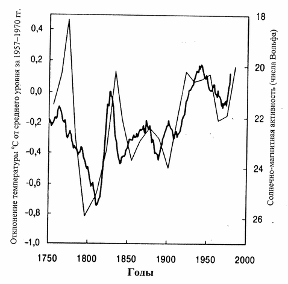

Международный энвайронментализм
Движение "зеленых" имеет социалистические корни и распространяется, как и социализм, в международном масштабе, оказывая давление на экономику и уровень жизни все новых и новых стран.
* * *
- Введение 2
- Идеология энвайронментализма 5
- Экономический ответ 6
- Проблема регулирования 6
- Проблема ресурсов 7
- Проблема загрязнения 8
- Проблема актуальности 10
- Методология энвайронментализма 10
- "Принцип предосторожности" 10
- Концепция "устойчивого развития" 12
- Международные организации и энвайронментализм 14
- Программа по защите окружающей среды ООН 14
- Неправительственные организации (NGO) 14
- Greenpeace 16
- Современные экологические проблемы: мифы и реальность 17
- Исчерпание природных ресурсов 17
- "Озоновая дыра" 21
- "Парниковый эффект" и "глобальное потепление" 23
- Что такое "глобальное потепление"? 23
- Чем это грозит? 24
- Каковы прогнозы изменения температуры? 24
- Есть ли альтернативные теории? 25
- Какие предлагаются решения? 27
- Что представляет из себя "Киотский протокол"? 28
- Каковы последствия? 29
- Какова роль России? 30
- Загрязнение воздуха и воды 32
- Пример США: сначала богатство - потом чистота 32
- Решение проблемы трансграничного загрязнения 35
- Ядерная энергетика 36
- Безопасность реакторов - Чернобыльский инцидент 38
- Экономические аспекты 41
- Радиоактивные отходы 42
- Проблема консервации реакторов 43
- Проблема ядерного оружия 44
- Проблема "отвлечения средств" 44
- Трансгенные продукты 44
- "Опасности" 46
- Национальное регулирование 48
- Консервация 48
- Масштабы опасности 50
- Философия консервации 51
- Консервационные решения 52
- Заключение 55
- Факты, которые полезно помнить 55
- Правила критического мышления 55
- Уроки науки 55
- Принципы политической экономии 55
- Уроки ложных тревог 56
Введение
Попытки правительства потерпели очередной крах. Генофонд нации безвозвратно подорван. БАМ никому не нужен. Восстановление Храма Христа Спасителя никому не нужно. Мы отстали от Запада навсегда. Россия переживает экологическую катастрофу. Россия переживает нравственную катастрофу. Российской науки больше нет. Российской авиакосмической промышленности больше нет. В России тоталитарный строй, а партии и свободная пресса - это чтобы замазать глаза Западу. В тоннелях метро завелись крысы-мутанты ростом с овчарку. Все российские атомные электростанции стоят на тектонических разломах и вот-вот разломятся.
Александр Горянин, ``Мифы о России и дух нации''
Человеку свойственно бояться. Наследие первобытных времен - ощущение незащищенности, надвигающейся катастрофы, преследует нас до сих пор, даже тогда, когда мир стал намного более безопасен, а средняя продолжительность жизни выросла в 2-3 раза. Всю свою историю человечество боялось. Гнева богов, Страшного Суда, конца света, наступления ледникового периода. В конце 19-го века страшные прогнозы уверяли, что по мере увеличения числа лошадей через несколько лет города будут погребены под грудами зловонных экскрементов. Канализация и автомобили спасли нас от этой страшной судьбы.
Во второй половине 20-го века, а точнее, в середине 60-х, человечество стало свидетелем рождения новой формы человеческих страхов - страхов человечества перед самим собой и собственными разрушительными возможностями. Очевидно, что страхи были небезосновательными, они были вызваны начавшейся гонкой вооружений, разработками ужасающего по силе оружия и всевозрастающим вмешательством человечества в земную экосферу. Ответом на первый вид страхов стало движение за мир и разоружение - которое, несмотря на поддержку прежде всего со стороны левого, социалистического крыла политиков, сумело добиться сколько-нибудь значительных результатов только в процессе крушения СССР. Ответом на второй вид страхов стал экологическое движение, энвайронментализм, или, как его иногда не совсем верно называют, "движение зеленых".
Эта природоохранная тенденция включает большой комплекс идей, построенный на признании человеческой ответственности за весь нечеловеческий мир. Энвайронментализм возник как развитие христианской этики и одновременно критика некоторых ее интерпретаций, вплоть до человеконенавистничества, когда именно человек, его деятельность объявляются зловредным источником разрушения окружающего растительного и животного мира, загрязнения почвы, воздуха и воды. Идеологические основы энвайронментализма весьма разнообразны, консервационисты, эколоджисты, "зеленые" партии и движения, эко-анархисты - кажутся неотличимыми для стороннего наблюдателя, однако часто весьма различаются как по методам, так и по основным убеждениям.
Одной из широко разделяемых внутри экологического сообщества целей является борьба с загрязнением окружающей среды. В этом смысле, подавляющая часть населения земли является энвайронменталистами, поскольку вряд ли кто-то в здравом уме будет выступать против чистой воды и воздуха для себя и своих детей. Энвайронменталисты, однако, максимизируют термин "загрязнение" до таких масштабов, когда "борьба с загрязнением" по сути превращается в борьбу с ведением хозяйственной деятельности.
Большинство "зеленых" считает загрязнителем газ CO2, двуокись углерода, относительно безвредный для людей и даже полезный для растений. Сторонники Киотского протокола и гипотезы о "глобальном потеплении" считают, что CO2 является причиной изменений в климате Земли, могущих привести к глобальным катаклизмам. Однако борьба с излишками эмиссии CO2 в предлагаемых энвайронменталистами масштабах (подробнее см. в главе о Киотском протоколе) для большинства развитых и развивающихся стран выливается в такие огромные материальные издержки, что ставит под вопрос экономический прогресс на многие десятки лет вперед.
Хочется еще раз подчеркнуть, что озабоченность состоянием окружающей среды, качеством питьевой воды и воздуха - дело, скорее, нормальное. Однако решения, которые предлагаю энвайронменталисты в качестве механизма реализации своей программы включают в себя в основном различного рода административные ограничения и запреты. Собственно, именно в этом и состоит основная проблема связанная с энвайронменталистами. Своими действиями они существенно повышают общественные издержки:
- через дополнительные налоги, собираемые с граждан, которые тратятся на поддержание в рабочем состоянии механизма экологического принуждения, различного рода обязательные экологические исследования, часто абсолютно не нужные;
- через дополнительные издержки компаний, вынужденных соблюдать неадекватные правила и ограничения касательно технологических процессов и готовой продукции;
- через ущерб от "акций прямого действия", когда защитники окружающей среды насильственными и, в большинстве случаев, преступными методами вмешиваются в чужую хозяйственную деятельность. Несмотря на декларируемый отказ от насилия, для некоторых радикально настроенных групп в порядке вещей является причинение ущерба чужой собственности, а иногда и здоровью. Одна только эколого-террористическая группировка Фронт освобождения земли (Earth Liberation Front, ELF) с 1992 по 2001 год взяла на себя ответственность за действия, ущерб от которых оценивается в 23 миллиона долларов.
Ситуация особенно усугубляется тем, что деятельность энвайронменталистов разворачивается не только на государственном, но и на межгосударственном уровне.
Международный (или Всемирный) Союз Охраны природы был основан в 1948 году и объединяет 74 государства, 108 правительственных организаций, 688 национальных неправительственных и 72 международные неправительственные организации (НГО). В 1972 году была основана Программа по защите окружающей среды ООН (United Nations Environment Programme, http://www.unep.org/), целью которой является пропаганда и продвижение "разумного использования и устойчивого развития (sustainable development) мировой окружающей среды".
Кроме того, на межгосударственном уровне действует огромное количество международных общественных организаций, вроде Greenpeace или Всемирного фонда дикой природы (World Wildlife Fund).
Регулирование на государственном, и тем более, на межгосударственном уровне нарушает один из основных принципов, провозглашаемый самими "зелеными": Think globally, act locally (Думай глобально, действуй локально). Государство призывают действовать глобально, вводить единообразное регулирование для всех компаний. Киотский протокол - глобальная акция. При этом считается, что люди, собравшиеся в Киото, знают о ситуации каждого человека на Земле лучше, чем сам этот человек и способны указать ему выход лучше, чем он сам может придумать. Такого рода логика - это логика социалистического Госплана, на деле доказавшая свою неэффективность. Давайте признаемся: группа людей, большая часть из которых даже не является климатологами, не способна спланировать климатические эффекты на 50 лет вперед. Глобальные решения приводят только к глобальным ошибкам.
В качестве хрестоматийного примера провала политики защиты окружающей среды можно привести случай с запрещением пестицида ДДТ, широко известного в России как "дуст". Многие люди старшего поколения до сих пор уверены, что "дуст запретили правильно". Между тем, факты свидетельствуют об обратном.
До использования ДДТ малярия уносила от 2 до 3 миллионов жизней ежегодно, число же страдающих этой тяжелой болезнью было еще больше. В результате 10-летнего применения ДДДТ в ряде стран малярия перестала быть столь страшным бичом. В Индии число заболеваний сократилось с 75 миллионов в 1952 году до 100 тысяч в 1964 году, в СССР с 35 миллионов в 1956 году до 13 тысяч в 1966 году. Всемирная организация здоровья и Организация объединенных наций относят на счет этого чудодейственного препарата спасение около 50 миллионов жизней, отнятых у одной только малярии. Изобретатель ДДТ, доктор Пауль Мюллер за свою работу был удостоен в 1948 году Нобелевской премии в области медицины.
Истерическая кампания против ДДТ началась в 1962 году, когда в США была опубликована книга Рэйчер Карсон (Rachel Carson) "Молчаливая весна" (Silent Spring), в которой применение ДДТ был обвинено в массовой гибели птиц. Далее, лабораторные исследования на мышах, которых кормили очень высокими дозами ДДТ, показали, что ДДТ способен вызывать у мышей развитие рака. Ситуация усугублялась тем, что период полураспада ДДТ составляет около 8 лет и он имеет тенденцию накапливаться в тканях. Тогда этого казалось достаточно, чтобы запретить ДДТ как опасный химикат.
Запрет оказался почти глобальным. В то время, как ВОЗ и ЮНИСЕФ настаивали и настаивают на продолжении использования ДДТ, различные государственные агентства специализирующиеся на помощи бедным странам (например, USAID), отказывались выделять деньги на пестицид, запрещенный к использованию правительствами их стран и оказывали давление на правительства стран-реципиентов с тем, чтобы инициировать запрет ДДТ. Особенно печальна в этом роль Всемирного фонда дикой природы, руководство которого активно агитировало и до сих агитирует за всемирный запрет ДДТ (www.worldwildlife.org...).
Результаты были катастрофическими. В Шри-Ланке, где в результате применения ДДТ заболеваемость малярией сократилась с 2,800,000 случаев в 1948 году до 17 (!) в 1964, она вернулась к 2,500,000 в 1969, пять лет спустя после того, как использование ДДТ было прекращено в результате "кампании международной общественности". Аналогичная ситуация наблюдалась в странах Африки. Сейчас от малярии ежегодно умирает 1-2 миллиона людей, что особенно трагично с учетом того, что существовала возможность вообще стереть болезнь с лица Земли. По различным оценкам, за прошедшие годы в результате запрета ДДТ на планете погибло от 30 до 50 миллионов человек.
За тридцать последующих лет стало очевидно, что ДДТ не является ни канцерогеном для человека, ни мутагеном для животных, не приводит к сокращению популяций птиц, что до остальных случаев ущерба окружающей среде, то они были исключительно локальными и объяснялись сильной передозировкой. Ближайший аналог ДДТ - малатион стоит в два раза дороже и требует в два раза более частого применения. Дельтаметрин, еще один инсектицид - в три раза дороже, а высокоэффективный пропоксур, почитаемый как замена ДДТ - в двадцать три раза. Для бедных стран со скромными бюджетами такие цены оказываются просто недоступными.
Несмотря на все это, в 1995 году Программа по защите окружающей среды ООН (United Nations Environment Programme) предложила внести ДДТ в список 12 всемирно запрещенных препаратов-загрязнителей, правда, под нажимом ВОЗ к 2000 году от этой идеи пришлось отказаться.
С запрещения ДДТ в 1972 году по сути началось восхождение энвайронменталистов во власть в США. Именно в этот момент на Агентство по защите окружающей среды, основанное за два года до этого, стали смотреть как на организацию с большими возможностями. Более подробно об истории запрета ДДТ и последствиях можно почитать здесь:
www.acsh.org/publications/reports/ddt2002.html
http://www.junkscience.com/ddtfaq.htm
Подобных примеров масса, и это само по себе не удивительно: катастрофизм и истерия редко приводят к принятию взвешенных решений. Очевидно, что необходимо противостояние энваронментализму со стороны здравых сил, понимающих последствия такого рода поспешных действий для экономики государств и благосостояния и жизней граждан. Цель данного исследования - проанализировать основные "ужасы", которыми энваронменталисты пугают общественность и найти способы решения проблем, предлагающие минимальное вмешательство в хозяйственную деятельность компаний со стороны государства или иных третьих лиц. Сплошь и рядом, однако, окажется, что проблема целиком надумана и единственное решение, которое требуется в этой ситуации - квалифицированно организованная PR-кампания.
Идеология энвайронментализма
Существует несколько наборов "заповедей" энвайроменталистов, такие как "четыре столпа Зеленой партии", "десять принципов партии Зеленых США" или "шесть принципов". Однако по большей части, это наборы декларативных идиологем вроде "социальная справедливость" или "отказ от насилия". Насколько можно судить по выступлениям и статьям "зеленого движения", основные убеждения их заключаются в следующем:
- Рыночная экономика приводит к постепенному исчерпанию природных ресурсов. Поскольку природные ресурсы ограничены, то в какой-то момент они подойдут к концу и экономика рухнет.
- Рыночная экономика порождает загрязнение окружающей среды. Компании, ставящие прибыль выше экологической безопасности, будут работать, не обращая внимания на ущерб окружающим людям и экосфере.
- Экологические проблемы, такие как загрязнение окружающей среды, изменения климата, вырубка лесов, исчезновение редких видов сегодня являются самыми приоритетными и актуальными.
- Для того, чтобы решить вышеуказанные проблемы, над компаниями должен быть установлен жесткий государственный и межгосударственный контроль, режим экономии ресурсов и ограничения загрязнений. Компаниям должно быть указано, что можно, а что нельзя делать.
Энвайронментализм является продуктом веры в социальное государство и базируется, по сути, на тех же допущениях, что и социализм. Подобно тому, как социалисты всех мастей считают, что частное предпринимательство нуждается в ограничении и регулировании потому, что иначе народ будет страдать от "эксплуатации", "монополий" и "кризисов", энвайронменталисты считают, что в отсутствии регулирования народ будет страдать от "кислотных дождей", "глобального потепления" и "загрязнения среды". Я специально ставлю эти слова в кавычки - они представляют собой абстракции, с которыми в реальности практически никто не сталкивался. Подобно социалистам, энвайронменталисты считают деньги корнем всех зол, а конкуренцию - "законом джунглей", ситуацией, в которой выживает сильнейший.
Поскольку сильная убежденность снижает порог критичности, социалисты не замечают исторических фактов, свидетельствующих об недостатках их идеологии. Они думают, что крушение социалистического лагеря было вызвано провалами в науке и технологиях. "Если бы у Госплана были современные компьютеры, все могло бы быть совершенно по другому". Проблема, однако, не в науке, а праве принимать решения. Социалистическая система лишает права принимать экономические решения всех, кроме специально уполномоченных людей, лишенных всякой связи с потребителями. Наивно думать, что эти люди справятся с этой задачей лучше, чем те, в интересах кого они якобы действуют. Никакой Госплан не сможет заменить миллиарды экономических решений, ежедневно принимаемых людьми в странах с рыночной экономикой.
Подобно социалистам, энвайронменталисты считают, что уполномочив определенных людей на решение экологических проблем и ограничив действия всех остальных, общество будет способно справиться с этими проблемами. В результате, в ситуациях, подобных Киотскому соглашению, мы вполне можем прийти к всемирному правительству, контролирующему и планирующему любое производство, связанное с выделением CO2 в атмосферу.
Слова Барри Коммонера (Barry Commoner), первого кандидата в президенты США от партии "зеленых", позволяют проследить еще более тесную связь между социализмом с энвайронментализмом. Коммонер утверждал, что предсказание Маркса о прогрессивном обнищании рабочего класса при капитализме не сбылось, потому что капиталисты все это время эксплуатировали природу, и сейчас, когда природные ресурсы уже совсем подойдут к концу, тут-то обнищание и начнется. К счастью, ресурсы природы сейчас весьма далеки от истощения, а, как будет показано далее, они принципиально неисчерпаемы - именно поэтому пророчеству Коммонера уготована та же судьба, что и пророчеству Маркса.
Таким образом, фактически единственное различие, которое можно провести между социализмом и энвайронментализмом, заключается в следующем: сторонники первого хотят, чтобы частные предприниматели страдали во имя всего остального человечества (как показала практика, абсолютно напрасно страдали), а вторые - чтобы кроме того, они страдали еще и во имя живой и неживой природы.
Экономический ответ
Проблема регулирования
В качестве панацеи от капиталистического загрязнения "зеленые", в лучших традициях социализма предлагают простое решение - если кто-то загрязняет общественную собственность или причиняет вред общественному здоровью, то общество (то есть правительство) должно его остановить. Однако правительственное вмешательство -- в виде экологических норм, требований безопасности или законов о сохранении ресурсов способно обеспечить сохранение жизней и собственности только за счет ограничения предпринимательской деятельности, что не замедлит вылиться в замедление экономического роста. Конечным результатом такой политики будет существенно большее отрицательное воздействие на благосостояние, здоровье и уровень смертности, так как понижению дохода сопутствует ухудшение здоровья.
Далее, большая часть запретов и регулирования вводится в условиях сильной неопределенности, наличия противоречивых научных данных относительно причин и методов решения проблемы. И такая ситуация неизбежна: так действуют рыночные механизмы. При угрозе возникновения регулирования (то есть убытков) и неочевидности опасности, предприниматели начинают пытаться предотвратить убытки, спонсируя научные исследования, доказывающие безопасность их продукции (или отходов). Поскольку исследовательские предпочтения (researcher's bias) способны оказывать колоссальное влияние на научные исследования, наука становится ареной "битвы титанов": кто больше бросит денег на противоположные чаши весов. К сожалению, далеко не всегда выигрывает тот, кто прав.
Итак, с точки зрения экономики (а по сути - с точки зрения здоровья и благосостояния людей), идеальным решением было бы использование рыночных механизмов для решения проблем, выдвигаемых "зелеными". На первый взгляд кажется, что экология - это классическая область, где рыночными мерами невозможно ничего добиться. Далее мы покажем, что это не так.
Проблема ресурсов
Для того, чтобы сформулировать принципиальный экономический ответ энвайронменталистам, призовем на помощь теорию товара Карла Менгера, автора "Принципов экономики" и отца австрийской экономической школы. Менгер называет четыре характеристики вещи, необходимые, чтобы сделать ее товаром:
- Потребность со стороны людей;
- Определенные свойства вещи, способные связать ее с потребностью;
- Существование знания относительно способов связи вещи и потребности;
- Контроль над вещью, достаточный для того, чтобы удовлетворить потребность.
Последние две характеристики, хочется особенно подчеркнуть, могут быть приданы вещи только человеком. Знание, относительно того, как с помощью природного ресурса удовлетворить потребность и способность воплотить это знание в жизнь - без этого не существует товара. Что это означает? Это означает, что природные ресурсы сами по себе не являются товаром. Товаром их делает человеческая деятельность и знания.
Или, цитируя самого Менгера: "Вещи, которые можно связать с удовлетворением человеческих потребностей, называются "полезными вещами". Если, однако, мы все признаем эту связь и имеем достаточно контроля, чтобы использовать эти вещи для удовлетворения наших потребностей, мы называем эти вещи "товарами".
Железо, которое присутствовало в земной коре начиная с того момента, как Земля оформилась в планету, не стало товаром до того, как человеческая находка не превратила его в полезное орудие. Нефть не была товаром до середины 19-го века, когда она была открыта. Более того, даже спустя много лет после открытия большая часть серосодержащей нефти не была товаром, а стала им только после открытия процесса крекинга компанией Рокфеллера Standard Oil.
Поскольку полное отсутствие каких бы то ни было природных ресурсов представить трудно, а вот отсутствие знаний и умений - легко, мы приходим в логичному выводу, что человек, как генератор знаний и умений, является намного более ценным звеном в процессе создания товара из природного ресурса, чем природа. Природа дает нам материю в виде разнообразных химических элементов и их комбинаций и энергию во всех ее разнообразных формах. Основной характеристикой как материи, так и энергии, является ОГРОМНЫЕ ИХ ОБЪЕМЫ. Фактически, если принять предположение, о бесконечности вселенной, их объем бесконечен. Именно в связи с бесконечностью количества, их ценность будет стремиться к нулю. Что является действительно ценным - так это труд и знания человека, вложенные в материю и энергию.
Даже если принять то, что мы (надеюсь, временно) ограничены нашей планетой, количество ресурсов все равно огромны. Наша планета - гигантский шар из разнообразных химических элементов. В нашем распоряжении также вся энергия, которая сопровождает ее - от движения вокруг своей оси и вокруг Солнца, до атмосферных штормов, каждый из которых выделяет больше энергии, чем все человечество производит за год.
Далее, мы подходим к тому, что является наиболее значительным выводом из теории Менгера. Человечество, своим трудом и знаниями способно увеличивать доступные ресурсы - увеличивать до бесконечности. Это означает, что точка зрения энвайронменталистов, озвученная выше Коммонером, согласно которой природные ресурсы ограничены, а человечество своим трудом их непрерывно исчерпывает - принципиально неверна. Человечество не просто не исчерпывает ресурсы, а наоборот, постоянно прибавляет к ним все новые и новые, непрерывно находя применение все новым и новым видам материи и энергии. Прогресс науки и техники делает ресурсы Земли все более и более доступными в качестве товаров.
При этом, к настоящему моменту часть ресурсов, использованных человеком и открытых в качестве ресурсов (то, что называется разведанные месторождения) - ничтожно мала. На сегодняшний день человечество заселило менее трети поверхности земли и ничтожно малую часть мирового океана, а глубина скважин по прежнему измеряются в метрах, а не в километрах. Человечество пока только скребет по поверхности Земли, не подозревая, какие богатства ждут нас внутри.
Однако, у всего этого есть и обратная сторона. Несмотря на потенциальную бесконечность, в каждый конкретный момент времени природные ресурсы будут ограничены, поскольку ограничены человеческие возможности. Это создает относительную редкость тех или иных ресурсов определенного качества, в результате чего, собственно, существует рынок и цены. При отсутствии редкости рынок невозможен.
Что же происходит, когда один из ресурсов по каким либо причинам становится более редким? Он автоматически становится более дорогим. Далее, рост цен на него автоматически стимулирует инновации в этой области - вдохновленные высокими ценами, а следовательно, потенциально высокой прибылью, люди пытаются обнаружить новые месторождения ресурсов или заменитель, обладающий похожими свойствами. Чем более редким (но при этом необходимым) становится ресурс, тем выше цены и тем больше усилий и денег вкладывается в то, чтобы сделать его более доступным и дешевым.
До сегодняшнего дня этот механизм работал безупречно, человечество не исчерпало ни один необходимый ресурс и нет никаких оснований полагать, что это может произойти в обозримом будущем. Далее, мы проверим наши теоретические выкладки на практике.
Проблема загрязнения
Кажется, что после индустриальной революции мир стал намного грязнее. Однако экологи, под словом "загрязнение" почему-то подразумевают исключительно техногенное загрязнение. Причина в том, что они не понимают относительность термина "загрязнение". Для них "загрязнение" - это нарушение естественного порядка вещей. Они не думают, что мир до индустриальной революции содержал огромное количество природных загрязнений, смертельно опасных для человека. "Загрязнение" - понятие человеческой логики и может применяться только относительно кого-либо. То, что является "загрязнением" для ежей вполне может не быть "загрязнением" для рыб. Земля посреди комнаты будет загрязнением для человека, но не будет загрязнением для находящихся в ней червей. В любом случае, при принятии решений мы в первую очередь исходим из интересов человека, а не из интересов остальной нечеловеческой природы. Одинокий Робинзон на острове не может быть загрязнителем, чтобы он ни делал. В экстремальном сценарии, если для обеспечения выживания человечеству придется уничтожить всю природу, какой она была изначально - то это будет сделано, потому что иначе все потеряет смысл (хотя скорее всего, нам никогда не придется столкнуться с таким выбором).
Сейчас модно жаловаться на качество водопроводной воды, мол, она очень грязная и совсем не такая, какой была раньше. Однако, если задуматься, то вода раньше была намного более грязной для человека из-за наличия в ней бактерий, вызывающих такие смертельно опасные болезни, как чума, оспа, малярия, туберкулез, холера, сыпной и брюшной тиф и так далее. В эпоху индустриальной революции, был изобретен процесс хлорирования: вода стала намного более чистой с точки зрения отсутствия в ней бактерий, вместо этого она стала загрязнена хлоркой и промышленными отходами. Следующим этапом было создание фильтров, которые достаточно успешно фильтруют практически все известные загрязнения. В результате, житель страны, пережившей промышленную революцию может установить у себя дома фильтр или регулярно заказывать уже отфильтрованную воду с доставкой на дом. В то время как житель доиндустриальной страны по-прежнему может испытывать проблемы с наличием питьевой воды. Вывод: вместе с прогрессом вода делается все более и более чистой.
С другой стороны, в конец 80-х годов Greenpeace начал кампанию по избавлению мира от хлорированной воды, поскольку им удалось найти какие-то исследования, подтверждавшие канцерогенность побочных продуктов хлорирования. Исследования впоследствии были многократно опровергнуты, однако правительство Перу купилось на пропаганду, усмотрев в ней потенциальный способ сэкономить и под благовидным предлогом перестало хлорировать большую часть водопроводной воды в стране. Greenpeace получил ровно то, что хотел, правда, при этом 1.3 миллиона человек заболели холерой, а 11 тысяч из них умерли. Больше никому такая идея в голову не приходила.
Экономическая теория рассматривает природные ресурсы и загрязнение как противоположные стороны одной медали. Копоть в воздухе, например, есть нежелательное загрязнение; о ней можно думать и как об отсутствии желательного чистого воздуха. В рыночной экономике нежелательные загрязнения стимулируют предпринимателей находить пути борьбы с ними - или с их последствиями. Именно с этим механизмом связано появление фильтров для воды, воздуха, "экологически чистых" (organic) продуктов питания и так далее.
Лорд Кеннел, руководитель экологической службы Великобритании, очень давно сформулировал суть проблемы: "За вычетом очень редких исключений, не существует таких загрязняющих среду факторов, которые бы не поддавались техническим решениям. Нужны только деньги."
Основное различие между природными ресурсами и загрязнением среды заключается в том, что блага, называемые "природными ресурсами", производятся, по преимуществу, частными фирмами, которые стремятся удовлетворить нужды потребителей ради получения прибыли. Сделка заключается на рынке, и потребитель, как правило, получает то, за что он готов платить. А благо, именуемое "отсутствием загрязнения среды", в современной рыночной экономике часто производят государственные организации - посредством регулирования, налоговых стимулов, штрафов и лицензий. Эти политические механизмы, обеспечивающие принудительное равенство спроса и предложения на установленном директивно уровне действуют не столь автоматически, и для достижения желаемого результата редко используют ценовой механизм.
Почему общество вынуждено прибегать к регулированию? Причина проста - неопределенность прав собственности. Ведь ущерб, понятие относительное, люди не могут нанести ущерб окружающей среде как таковой - люди могут нанести ущерб другим людям, которые хотели бы использовать эту же самую среду с другими целями. Создавая загрязнение, мы по сути нарушаем чьи-то права собственности, соответственно, собственник имеет право на компенсацию.
Однако в условиях, когда никто не владеет воздухом, землей и водными пространствами невозможно найти того, кому эта компенсация причитается. В результате, страдают все. Этот феномен широко известен в экономической литературе как "трагедия общественного" (tragedy of commons).
Выход есть - приватизация земли и водных пространств. Очевидно, что мы не можем приватизировать воздух, однако, в принципе мы можем приватизировать права на его загрязнение, не важно чем, дымом ли, невидимыми ли частицами, или шумом. В случаях, когда определенный загрязнитель причиняет ущерб определенной собственности, вопросы будут решаться переговорами или в суде. В случае, если конкретного загрязнителя установить невозможно (например, когда несколько заводов выбрасывают в воздух одно и то же вредное вещество) можно создать рынок прав на загрязнение, в рамках которого все загрязнители покупают квоты на загрязнение.
Можно также пойти и другим путем - не вводить специально никакого регулирования, надеясь на то, что при наличии достаточно убедительных доказательств вреда, акций протеста тех же "зеленых" и давления общественности, компании сами, без какого-либо законодательного принуждения будут систематически снижать вредные выбросы. Руководствоваться они будут при этом соображениями собственного имиджа и внутренней морали. Этот сценарий кажется утопическим, однако далее мы покажем, что крупнейшие компании мира безо всякого государственного давления, полностью самостоятельно снижают количество выбросов веществ, которые они считают вредными для окружающей среды.
Проблема актуальности
Энвайроменталисты утверждают, что проблема загрязнения окружающей среды является наиболее актуальной среди проблем сегодняшнего дня, и что капиталистическое общество в массе своей этого не понимает, а предприниматели, загрязняющие в среднем больше других, возможно и понимают, но ничего не делают, поскольку это не в их интересах.
Таким образом энвайроменталисты по сути пытаются узурпировать власть в обществе и указывать всем остальным, кто что должен или не должен делать. В подтверждение своих притязаний на власть ими приводятся результаты научных исследований, почти всегда сомнительные и спорные - из-за самой природы изучаемого вопроса. В экосфере земли происходят сложные системные процессы и предсказать эффекты от человеческой деятельности на сегодняшнем уровне развития моделей чаще всего очень трудно. В приведенном выше примере с ДДТ казалось, что в результате истребления насекомых будет сокращаться популяция птиц, которые этими насекомыми питались. Однако на деле сплошь и рядом оказывалось, что популяция наоборот, выросла - из-за резкого сокращения насекомых, переносящих птичьи болезни.
Методы энвайроменталистов находятся в резком противоречии с принципами рыночной экономики, согласно которым только потребители могут решать, какие товары для них актуальны в данный момент. Дело в том, что экономический закон, управляющий долгосрочным приростом производства чистого воздуха (или любого другого экологического блага), совершенно тот же самый, что в случае минералов, сельскохозяйственной земли, лесов, энергии и других ресурсов. Если некий ресурс, скажем, чистый воздух, делается все более редким, значит, общество использовало его, чтобы стать богаче. И у богатых стран больше, чем у бедных, возможностей и знаний, нужных для очистки воздуха. Они могут установить в котельных фильтры для очистки, а в домах - кондиционеры, перейти на другие источники энергии, нанять исследователей и т.д. Иными словами, как только возникло впечатление нехватки данного ресурса, как только на него растет спрос начинается хозяйственная деятельность, результатом которой оказывается производство нужного ресурса в "достаточном количестве". В рыночную экономику встроены механизмы, которые автоматически принимают решения относительно того, что сейчас актуально, а что нет. И чем больше в обществе сбережений и инвестиций, тем дальше в будущее смотрят инвесторы, тем больше финансируется исследований, направленных на то, чтобы узнать, что будет актуально в будущем, какие потребности возникнут, чтобы можно было уже сейчас готовиться к их удовлетворению.
Методология энвайронментализма
"Принцип предосторожности"
Вместе с идеологией, используемая "зелеными" методология также весьма сомнительна. В качестве критерия для введения или не-введения государственных запретов "зелеными" предлагается так называемый "принцип предосторожности" или "принцип опережающего предупреждения" (precautionary principle). Этот термин был введен в употребление в 1988 году и базируется на предположении, что если существует научая неопределенность относительно риска и последствий, то превентивные запретительные меры уже будут оправданы. К этому принципу как к некоей политической мантре обращаются "зеленые" в случаях, когда есть даже небольшой риск негативных экологических эффектов. "Принципу предосторожности" нельзя удовлетворить, научная неопределенность существует всегда и всегда есть хотя бы минимальный риск негативных экологических эффектов.
В связи с этим появилось несколько различных толкований "принципа предосторожности", однако в любом из них, "принцип предосторожности" приводит к тому, что регуляторное бремя доказательства безопасности переносится на изобретателя и/или производителя (в нормальной ситуации, предмет считается безопасным a priori, если никто не доказал обратное) - то есть для любого строительства, мобильных телефонов, химикатов, ГМ-организмов и т.д., должны существовать научные исследования, всеми возможными способами удостоверяющие безопасность технологии, прежде чем ее применение будет одобрено. В случае закрепления этого принципа на уровне национального законодательства, экономические аспекты будут действительно катастрофическими. Принцип фокусирует внимание на том, какие негативные последствия может вызвать введение новой технологии, однако он ничего не говорит о негативных последствиях, которые может вызвать ее не-введение. По логике "принципа", если будет изобретено лекарство от СПИДа, которое будет приводить больного к смерти через 30 лет с вероятностью 60% - от него нужно отказаться, потому что оно опасно для жизни людей. А СПИД не опасен?
Далее, этот абсурдный принцип широко применяется международными организациями при разработке и утверждении межгосударственных соглашений! Вот только некоторые из соглашений, в которых используется этот принцип:
Протокол о веществах, разрушающих озоновый слой, 1987
"Стороны этого протокола... желающие защитить озоновый слой, используя меры предосторожности для контроля глобальной эмиссии веществ..." (Protocol on Substances that Deplete the Ozone Layer, Sept. 16, 1987, 26 ILM 1541)
Рамочное соглашение об изменении климата, 1992
"Стороны предпринимают меры предосторожности, чтобы предупредить, предусмотреть и минимизировать последствия изменения климата..."
Конвенция о разнообразии биологических видов, 1992
"...когда существует угроза существенного сокращения или потери биологического разнообразия, отсутствие полной научной определенности не должно использоваться в качестве причины для откладывания мер, чтобы избежать или минимизировать такую угрозу"
UNEP, Программа по защите окружающей среды ООН, 1989
"Рекомендует всем правительствам применять "принцип предупреждающего действия" в качестве основы политики по предупреждению и устранению загрязнения морей."
Конвенция Бамако по опасным отходам в Африке, 1991
"Каждая сторона будет стараться адоптировать и внедрить превентивный, предварительный подход к проблемам загрязнения, который предусматривает, inter alia, предупреждения выбросов в окружающую среду веществ, которые могут повредить людям или окружающей среде, не ожидая научного подтверждения такого ущерба."
Картахенский протокол по биобезопасности, 2000
"Отсутствие научной определенности вследствие недостаточности научной информации и знания относительно масштабов потенциальных негативных эффектов живого модифицированного организма на консервацию и устойчивое использование биологического разнообразия импортирующей стороны, а также принимая во внимание риски для здоровья людей, не должно быть препятствием для импортирующей стороны к принятию [ограничительных] мер..."
Очевидно, то в таких формулировках "принцип" может быть использован (и используется) для оправдания каких угодно действий регулирующих органов, потому что всегда могут сохраняться опасения относительно потенциальной опасности тех или иных веществ, видов или технологий. Результатом, например, Картахенского протокола стало широкое использование "принципа" для протекционистских мер в рамках ВТО, в основном Евросоюзом по отношению к странам "группы Майами" (экспортеров ГМО).
В конце 90-х годов апелляционный комитет ВТО при разборе дела о содержании гормонов в американской и канадской говядине уклонился от выражения определенной позиции по вопросу применимости "принципа предосторожности" в международном праве. Было только отмечено, что статус принципа предосторожности в качестве нормы обычного международного права "далеко не ясен". Картахенский протокол прояснил ситуацию: "принцип предосторожности" играет на руку протекционистам.
В отчете CEP Technical Report No. 21 1993 "О применимости принципа предосторожности к программе по защите окружающей среды Карибского бассейна" (``Relevance And Application Of The Principle Of Precautionary Action To The Caribbean Environment Programme'') перечисляются практически все недостатки "принципа предосторожности", особенно для развивающихся стран:
- Сохраняется неопределенность относительно содержания принципа. [...];
- [Карибский] регион сильно зависит от импорта капитала. Приверженность "подходу предосторожности" [...] может отпугнуть инвестиции компаний, ищущих возможности переместить производства из других регионов;
- [...] "меры предосторожности" часто стоят больше при внедрении. Таким образом, они могут быть более дорогостоящими, [...] чем подход "жди и наблюдай";
- Некоторые экономисты считают (OECD, 1991), что экономически более целесообразно тратить деньги на научные исследования, позволяющие решить конкретные проблемы, по мере того, как они становятся очевидными и научно определенными, вместо обширных предупредительных мер, некоторые из которых могут оказаться ненужными;
- Производители могут попытаться сместить дополнительные издержки более чистых технологий на потребителей, таким образом делая некоторые продукты более дорогостоящими или на правительства, таким образом, что потребуется больше государственной поддержки на начальном этапе.
Еще подробнее критика "принципа предосторожности представлена в статье Джонатана Адлера (Jonathan H. Adler) The Precautionary Principle's Challenge to Progress (http://home.earthlink.net/~jhadler/prec.html).
Далее, признавая абсурдность и неприменимость "принципа предосторожности, некоторые "зеленые" перешли от запретительного принципа к разрешительному. "Правило воздержания" (rule of abstention), пришедшее на смену "принципу осторожности" заключает в себе три критерия, в случае которых новая технология может быть внедрена в производство. Эти критерии таковы:
- Нулевой риск ущерба экологии;
- Необходимость избежать худшей ситуации;
- Необходимость облегчить бремя доказательства во время процедур урегулирования.
Этот принцип также не выдерживает никакой критики, поскольку не существует нулевого ущерба и нулевого риска, а выбор между двумя заведомо плохими ситуациями всегда будет являться предметом разногласий.
Концепция "устойчивого развития"
Словосочетание sustainable development в переводе может означать также "поддерживающее развитие" или "развитие, которого можно придерживаться, приемлемое, обоснованное развитие". Глагол to sustain, от которого образовано прилагательное sustainable обычно означает "поддерживать", однако, в некоторых ситуациях, может означать "задерживать, сохранять, консервировать". Это сочетание "поддержки" и "задержки" весьма показательно.
Концепция "устойчивого развития" родилась в 1987 году из доклада норвежского премьер-министра Гро Харлем Брундтланда (Gro Harlem Brundtland) и Всемирной комиссии по окружающей среде и развитию (World Commission on Environment and Development), озаглавленного "Наше общее будущее" (Our Common Future).
В отчете, в частности, говорилось, что "устойчивое развитие, это развитие, которое следует нуждам нынешнего поколения без того, чтобы не дать возможность будущим поколениям удовлетворить свои нужды". "Устойчивое развитие" подразумевает два принципа:
- Принцип "нужд" (needs), в особенности выделяются жизненно-важные нужды бедного населения Земли, которым должен быть дан приоритет.
- Идея ограничений, налагаемых государством на компании, технологии и социальные институты, чтобы у окружающей среды сохранялась способность удовлетворять нынешним и будущим нуждам.
Принцип неявно подразумевает, что у нынешнего поколения, во-первых, есть знание относительно нужд будущего поколения (что не так - кому 30 лет назад могло придти в голову, что человечеству будет нужен интернет?), а во-вторых, что у нынешнего поколения - точнее, отдельных его представителей - есть право говорить от лица будущих поколений (что также не так, поскольку мнение будущих поколений невозможно узнать). Кроме того, "устойчивое развитие" подразумевает конечность природных ресурсов - что, как мы уже выяснили, глубоко ошибочная концепция.
В 1992 году на Саммите Земли (Earth Summit) в Рио-де-Жанейро, тот самый, на котором была принята рамочная конвенция относительно "глобального потепления", были установлены 27 принципов, поддерживающих устойчивое развитие (http://www.igu.org/what_is/guiding.asp) и "Три столпа устойчивого развития":
- Социальный прогресс (равенство, социальное единение, социальная мобильность, культурная индивидуальность)
- Экономический рост (рост, эффективность, стабильность)
- Защита окружающей среды (здоровая окружающая среда, рациональное использование возобновимых ресурсов, консервация невозобновимых ресурсов).
Как видно, большая часть принципов - политические лозунги с неясным значением. При этом с одной стороны, признавалось, что неконтролируемое производство и потребление требуется ограничить (``Sustainable development is directly linked to the elimination of unsustainable patterns of production and consumption.'') а с другой стороны, декларировалась цель "уничтожения бедности" (www.un.org/esa/sustdev/). Из истории известно, что ограничение роста и рост бедности находятся в прямой зависимости.
Одна из интерпретаций "устойчивого развития", известная как "сильная устойчивость" предполагает, что естественный капитал, такой как леса, дикая природа не может ни при каких обстоятельствах быть заменен на другие формы капитала, производимыми человеком. Таким образом, например, использование пестицидов не может быть оправдано положительными эффектами для здоровья людей, потому что возможны негативные эффекты для естественного капитала.
Девиз кампании по запрещению токсичных химикатов Фонда дикой природы (WWF) гласит: "Давайте оставим нашим детям живую планету". Очевидно, эта эмоциональная фраза должна подразумевать заботу о наиболее уязвимых членах нашего общества. Однако тот факт, что в результате запрета ДДТ на планете стало на несколько миллионов детей меньше, почему-то совершенно выпускается из виду.
В некоторых интерпретациях, концепция устойчивого развития сводится к так называемым "5 R" принципам экономики замкнутого цикла:
- уменьшение энерго- и материалоемкости (reduction)
- замещение "невозобновляемых" ресурсов "возобновляемыми" (replacement)
- восстановление нужных компонентов из переработанных отходов (recovery)
- рециркуляция отходов (recycling)
- многократное использование продукции (reuse)
При этом совершенно не обсуждается экономическая целесообразность данных мер в рамках экономики, не подразумевающей никакого замкнутого цикла, а наоборот, подразумевающей непрерывный рост и развитие, в том числе, постоянное открытие новых источников ресурсов. Несмотря на тот факт, что "концепция устойчивого развития" является по сути антинаучной и антиэкономической, многие международные соглашения, подписанные в рамках ООН ссылаются на нее.
Международные организации и энвайронментализм
Программа по защите окружающей среды ООН
При ООН действует специальная Программа по защите окружающей среды (United Nations Environment Programme или UNEP), которая занимается проведением политики "устойчивого развития" на межгосударственном уровне. Практически все международные договора, имеющие отношение к экологии подписываются под эгидой этой организации. Вот только некоторые из ее "достижений":
- UNEP была одним из ключевых сторон, продвигавших Монреальский протокол о веществах, разрушающих озоновый слой 1987 года. В результате этого соглашения развитые страны к 1996 году прекратили производство и потребление большей части веществ (примерно 75%), которые, как считалось, приводили к разрушению озонового слоя. Подробнее о проблеме озонового слоя смотри раздел "Озоновая дыра".
- В результате усилий UNEP была принята Конвенция ООН о разнообразии видов (Convention on Biological Diversity) и Картахенский протокол к ней. Подробнее о последствиях принятия этой конвенции смотри раздел "Трансгенные продукты".
- Кроме того, UNEP является администратором Конвенции о международной торговле видами дикой флоры и фауны, находящимися под угрозой исчезновения (Convention on International Trade in Endangered Species of Wild Fauna and Flora, CITES), под защитой которой находятся более 30 тысяч видов. Подробнее о деятельности UNEP в рамках этих программ, и особенно об "усилиях" UNEP по спасению слонов и носорогов от угрозы исчезновения, смотри раздел "Консервация".
- При участии UNEP в 1998 году была подписана Роттердамская конвенция, ограничивающая торговлю опасными для человека пестицидами и химикатами. Теперь компания, импортирующая один из 22 видов пестицидов или один из 5 видов промышленных химикатов должна каждый раз получать у регулирующих органов своей страны специальное разрешение. ДДТ, о котором упоминалось выше, является одним из пестицидов, попадающих под действие данной конвенции.
С более полным списком "достижений" можно ознакомиться тут.
Неправительственные организации (NGO)
Неправительственные или негосударственные организации (non-governmental organizations, NGO, НГО) начинают играть все более и более заметную роль в международной политике. Используя деньги богатых благотворительных организаций, таких как Ford Foundation или UN Foundation Теда Тернера (а часто даже и деньги правительств и ООН) они используют различные международные форумы, конференции ООН или ВТО, для того, чтобы оказывать влияние на международную политику в области окружающей среды и международную торговлю.
В 1968 году в той или иной мере ООН было признано 260 НГО. Сейчас около 3,000 НГО имеют консультативный статус при различных ООН-овских организациях, таких, например, как UNEP или Международная морская организация. Консультативный статус позволяет им участвовать в заседаниях, хотя и не позволяет голосовать. На одной только конференции в Картахене в 2000 году (на ней был подписан Картахенский протокол по биобезопасности) было более сотни представителей от 50 различных НГО. Наиболее заметные в международном масштабе экологические НГО - Общество Рукус (Ruckus Society), клуб Сьерра (Sierra Club), Друзья Земли (Friends of the Earth) и, конечно же, Greenpeace. ООН привлекает, главным образом, вполне определенный тип НГО - организации с социальными целями и задачами, которые как раз можно решить, используя возможности ООН.
Большая часть НГО считает себя представителями "гражданского общества", в отличие от представителей государства. Разумеется, их никто не выбирал представителями - так же, впрочем, как никто не выбирал чиновников ООН. Чиновники ООН утверждают, что их цель по отношению к развивающимся странам - помочь им "расширить возможности". Это значит, что они используют консультантов из НГО для того, чтобы предоставлять консультации и другие услуги правительствам развивающихся стран по вопросам экономической и социальной политики. Такие проекты позволяют НГО проталкивать свои идеи в правительства развивающихся стран. Что мы видим в результате? Например, Комиссия ООН по устойчивому развитию (точнее, ее отделение занимающееся транспортом и энергетикой) при поддержке НГО советует внедрять инструменты центрального планирования, регулирования энергетики и субсидии для объектов "возобновляемой энергетики" (солнечной, ветряной, геотермальной). Правительства, возможно, предпочли бы построить гидроэлектростанции или станции на природном газе, однако в результате они попадают в зависимость от "альтернативных решений", предлагаемых НГО. Имея аккредитацию при ООН, члены НГО автоматически получают влияние на механизм принятия решений в правительствах развивающихся стран.
Кроме участия НГО в различных мероприятиях ООН, НГО проделывают огромную работу. Они разрабатывают тексты для международных договоров, соглашений, конвенций, и других инструментов международного права. Они наблюдают за деятельностью правительств и компаний, чтобы убедиться в том, что последние соблюдают национальные и международные законы, а если нет - то их юристы могут подать в суд. НГО спонсируют газетные публикации и различные публичные акции, такие как бойкоты, пикеты, демонстрации, чтобы протестовать против решений, которые им не нравятся. Наиболее предприимчивые НГО за деньги помогают правительствам добиваться соблюдения экологических законов, НГО же и пролоббированных.
В качестве примера странной власти НГО широко известна история с запретом китобойного промысла. Для регулирования и ограничения китобойного промысла в 1964 году была создана Международная китобойная комиссия, включавшая представителей стран, наиболее озабоченных проблемой чрезмерного сокращения популяции китов. Первоначально, членами комиссии были Япония, Исландия, Норвегия, Канада и СССР, однако членом комиссии мог стать каждый, кто был согласен платить 20-30 тысяч долларов ежегодно плюс оплачивать стоимость командировок своих представителей. Как утверждает бывший консультант Greenpeace Франциско Паласио (Francisco Palacio), он и тогдашний глава этой организации, Дэвид Мактаггарт (David McTaggart) решили пролоббировать через комиссию полный запрет китобойного промысла.
Для этого они выбрали несколько бедных стран, только-только присоединившихся к ООН, таких как острова Антигуа или Сент-Люсии и, взяв на себя все расходы, подали документы на получение представительства в комиссии. Представителями стали их друзья, например, друг Мактаггарта, француз Поль Гуин стал представителем от Панамы. Они получали 300 долларов в день на представительские расходы и полную оплату перелетов. В период между 1978 и 1982 годом им удалось увеличить число участников комиссии на 12 стран и получить три четверти голосов, необходимых чтобы полностью запретить китобойный промысел.
Финансирование НГО - вопрос, который всегда оставался и остается покрытым тайной. Основные спонсоры НГО - частные фонды, такие, например, как UN Foundation (несмотря на название, не имеет непосредственного отношения к ООН, основана Тедом Тернером, пообещавшим выделить на различные международные программы 1 миллиард долларов), Eurasia Foundation (в основном финансируется государственным агентством USAID) и другими частными благотворительными фондами.
База данных Eurasia Foundation, например, позволяет заключить, что американское правительство регулярно спонсирует экологические НГО в пределах СНГ.
Например, в 1997-1998 годах было выделено 160 тысяч долларов на проект спонсирования интернет-доступа для 49 экологических НГО. В декабре 2002 года было выделено 31,720 долларов на программу поддержки Магаданского центра окружающей среды. В сентябре 2002, 90 тысяч долларов - организации ИСАР (ISAR, the Initiative for Social Action and Renewal in Eurasia) в Белоруссии, на программу малых грантов для энвайронменталистских НГО.
Тот же ИСАР, независимо от Eurasia, проводит программу выдачи грантов на исследования в области "Радиационная безопасность и гражданское общество" на деньги частного американского фонда Ploughshares Fund.
Таких примеров бесчисленное множество.
Greenpeace
Greenpeace является весьма показательным примером "экологически озабоченной" НГО. Организация была основана в 1976 в Ванкувере (Канада) американcкими гражданами, бежавшими туда от призыва. Сейчас это практически глобальная организация с офисами в 24 странах и штаб-квартирой в Амстердаме. Несмотря на рождение в Канада, Greenpeace намного более популярен в Европе. Одна из причин этого в том, что в Европе не существует строгих законов о раскрытии информации по отношению к общественным организациям: поэтому точные источники финансирования Greenpeace известны только в США.
В 2002 году организация потратила более 360 миллионов долларов на персонал, различные "экологические" мероприятия, разработку документов и исследования. Основными донорами организации в США являются крупнейшие благотворительные фонды, такие как Turner Foundation, Rockefeller Brothers Fund, John D. & Catherine T. MacArthur Foundation, David & Lucile Packard Foundation, V. Kann Rasmussen Foundation. Greenpeace утверждает, что не принимает денег от правительств, политических партий или компаний, однако журналистами была неоднократно замечена обратная корреляция между источником доходов и объектами внимания. Существует огромное количество свидетельств, что услуги Greenpeace используются в конкурентной борьбе, однако до суда дело ни разу так и не дошло, поскольку чаще всего средства частных инвесторов (как например, Теда Тернера, ярого энвайронменталиста) переводятся через благотворительные фонды и доказать, что именно эти деньги получил Greenpeace достаточно сложно.
Однако, известно, что в Бразилии после кампании устрашения в отношении потенциальных опасностей генетически модифицированной продукции Greenpeace начал предоставлять услуги по лицензированию "натуральных" (organic) продуктов питания. (см, например, archive.greenpeace.org... или www.findarticles.com...)
Бывший глава Greenpeace UK (Великобритания), лорд Питер Мелчетт (Peter Melchett), активно сотрудничал с компанией Iceland Foods, крупнейшим производителем "натуральных" продуктов. Агентство по рекламным стандартам Великобритании в 2001 году запретило рекламную брошюру Iceland Foods, в которой рассказывалось об "опасностях" ГМ-продукции и утверждая, что ГМ-продукция привела к нескольким смертям. В докладе Международного фонда по сохранению естественных ресурсов (International Foundation for the Conservation of Natural Resources) за ноябрь 2001 года утверждалось, что Мелчетт является одним из крупнейших "натуральных" фермеров Европы. Согласно отчетам организации Consumer Reports, "натуральные" продукты стоят в среднем на 57% больше, чем обычные.
В настоящее время налоговая служба США идет расследование в отношении Greenpeace, по поводу обвинений в нарушении налогового законодательства. В США существует закон, согласно которому благотворительная организация может получать деньги от спонсоров, выдавая взамен налоговые освобождения, то есть донор может по своему усмотрению, вместо уплаты налога передать деньги на благотворительность. Однако, такие благотворительные организации не имеют права заниматься политическим лоббированием. Таким образом утверждается, что Greenpeace USA имеет два юридических лица: Greenpeace Fund, Inc., который не имеет права заниматься лоббированием, но имеет право получать необлагаемые налогом пожертвования, и Greenpeace, Inc., который как раз занимается политическим лоббированием. Все средства Greenpeace USA получает на счет Greenpeace Fund, Inc., который, затем, якобы передает их Greenpeace, Inc. и Greenpeace International в Амстердаме. (детали)
Далее, у себя на родине, в Канаде, Greenpeace создавало несколько юридических лиц с со статусом благотворительной организации, однако налоговая служба Канады каждый раз отзывала этот статус (в 1989, 1995 и 1999 годах). В последний раз, когда Greenpeace пыталась оспорить это решение в суде, глава Revenue Canada заявил, что отзыв благотворительного статуса связан с тем, что эта организация не приносит "общественной пользы" и, хуже того, может довести людей "до нищеты".
Далее, Greenpeace известен связями с эко-террористическими организациями, такими как Earth First!. Последняя организация широко известна своими "акциями прямого действия", такими так забивание гвоздей в деревья, чтобы повредить пилы (при этом часто страдают рабочие), поджоги биолабораторий, уничтожение посевов ГМ-культур. В 1995 году во время процесса в Гамбурге немецкий судья постановил, что "связь между Greenpeace и террористической организацией Earth First!" не может отрицаться. Один из основателей Earth First!, Майк Руссель (Mike Roselle) был первым координатором Greenpeace U.S. National Action и, впоследствии, членом совета директоров Greenpeace USA.
.Экологические проблемы и пути их решения
Исчерпание природных ресурсов
Как показано выше, сомнительная (хотя и кажущаяся очевидной) концепция конечности природных ресурсов лежит в основе программ "устойчивого развития" ООН и упоминается в ряде международных соглашений в качестве основополагающей. Она также подразумевается различными международными программами и НГО в их поощрении того, что они называют "возобновимыми" источниками энергии, уменьшение энерго- и материалоемкости, программ переработки отходов и так далее.
Также, выше мы показали, что исчерпание природных ресурсов человечеством теоретически невозможно. Как известно, в теории нет различия между теорией и практикой. Но на практике она есть. Находит ли наша теория подтверждение в повседневной жизни? Скорее нет, чем да: мы постоянно сталкиваемся с апокалиптическими прогнозами о том, что ресурсы вот-вот иссякнут и вот тогда-то на нас и обрушатся неисчислимые беды. В частности, в России популярен прогноз о том, что через 50 лет нефть в стране закончится. По каким-то психологическим причинам для многих такого рода катастрофические пророчества обладают необоримой притягательностью. Но вера в такие иррациональные предсказания навлекает несчастья, как было с теми, кто в конце первого тысячелетия распродал свое имущество и ушел в горы дожидаться близкого конца света.
Мировое производство продуктов питания продолжает уверенно обгонять рост населения. Сейчас уже мало кто вспоминает о популярном в 70-е годы страхе, что через 20 лет мир будет голодать. Однако вполне логична на первый взгляд точка зрения, что минеральные ресурсы со временем исчерпываются. Мы же не можем выращивать нефть, газ и железную руду так, как мы выращиваем картошку. Или можем?
Концепция "возобновимых и невозобновимых" ресурсов, согласно которой использование дерева якобы более предпочтительно, чем использование пластика, глубоко ошибочна. Не существует никаких "невозобновимых" ресурсов. Существуют ресурсы, для которых человечество пока не придумало способы возобновления. Это не значит, что их невозможно возобновлять в принципе. Нефть, например, можно получать из масличных растений -- из пальмового масла, соевого и т.п. Существуют также проекты получения топлива из различного рода отходов сельхозпроизводств, так называемый "биодизель". Несмотря на относительную дороговизну, в пределах следующих семи миллиардов лет (пока не погаснет Солнце) этот источник уже ни в каком разумном смысле нельзя считать конечным. Как показывает опыт, энвайронменталисты оказались точно также неправы относительно минеральных ресурсов, как и относительно еды.
В 1865 году английский экономист Стэнли Джевонс (Stanley Jevons) предсказал, что Англия скоро останется без угля и все фабрики встанут. Проделанное Джевонсом исследование убедило его, что и с помощью нефти проблемы Англии не решить. В 90-е годы нашего века правительству Джона Мейджора (John Major), несмотря на протесты профсоюзов пришлось закрыть изрядное количество шахт. Спустя 130 лет угля намного больше, чем его нужно.
В 1972 году был опубликован доклад Римского клуба под названием "Пределы Роста" (The Limits of Growth: A Report for the Club of Rome's Project on the Predicament of Mankind, New York: New American Library, 1972). Экстраполируя современные на тот момент тренды, авторы попытались доказать, что мир очень скоро исчерпает все мыслимые и немыслимые ресурсы. Золото должно было закончиться в 1981 году, ртуть и серебро - в 1985, цинк - в 1990, нефть - в 1992, свинец, медь и природный газ - в 1993. Гордон Рэттэй Тэйлор (Gordon Rattray Taylor) в своем труде "Книга Судного дня" (1970 год) предсказывал, основываясь на факте, что жители Северной Америки пользуются 50% всех мировых ресурсов, что к 2000-му году они будут использовать все 100%, если им будет позволено. Очевидно, что тренд идет как раз в противоположном направлении, с учетом того, как быстро развиваются азиатские и южноамериканские страны и что Европа и Австралия в общем-то тоже не находятся в глубоком кризисе. Помимо всего прочего, Тэйлор предсказывал, что к середине 70-х кончатся запасы урановой руды.
Что касается нефти, то мир собирается попрощаться с ней практически с того момента, когда она была открыта. В 1885 году исследование U.S. Geological Survey объявило, что мало шансов на то, что нефть будет открыта в Калифорнии. А в 1981 году тоже самое было заявлено относительно Канзаса и Техаса! В 1939 году Министерство внутренних дел США предсказывало, что нефти хватит еще на 13 лет. В 1949 году Министр внутренних дел все еще говорил, что нефть вот-вот уже закончится. В 1974 году U.S. Geological Survey (похоже, ничему так и не научившийся) объявил, что запасов природного газа в США хватит на 10 лет. Правда, Американская ассоциация природного газа (American Gas Association) тут же выступила с опровержением: по ее мнению запасов газа под Мексиканским заливом хватит на 1000-2500 лет. Ничего себе разброс "научных" оценок -- 10 лет и 2500 лет!
В 1944 году президент Рузвельт собрал заседание губернаторов штатов, чтобы обсудить с ними проблему исчерпания природных ресурсов. Если бы предсказания, на основе которых происходило то обсуждение, были верны, сейчас США остались бы без 21 из 41 важнейших ресурсов.
Разумеется, ничего из предсказанного не случилась. Причина проста - исследователи принимали во внимание только процесс расходования и совершенно игнорировали процесс открытия новых месторождений, прогресс в извлечении и обогащении, изобретение новых сберегающих технологий, открытие более дешевых заменителей. Игнорировали, хотя сам смысл извлечения ресурсов как раз и заключается в том, чтобы с помощью них стать богаче, в том числе и технологически. По сути, это проблема всех инженерных прогнозов конечности ресурсов. Они пытаются предсказать будущее так, как если бы мир все это время стоял на месте.
Кроме того, концепция разведанных запасов сама по себе обманчива: для производства информации о разведанных резервах нужны вложения средств. В каждый данный момент объем разведанных запасов говорит не столько о количестве нефти в земле, сколько об ожидаемой прибыльности нефтяных скважин. Концепция разведанных (или "доказанных") резервов очень полезна, когда фирмам приходится принимать решения -- прибыльно ли вкладывать средства в разведку новых месторождений. Точно также управляющему магазина нужно знать объем текущих запасов товаров, чтобы своевременно их пополнять. Однако объем текущих запасов в магазине ничего не говорит о запасах на складах оптовиков. Точно также, показатель разведанных запасов совершенно вводит в заблуждение, когда речь идет о будущих потребностях человечества.
В 50-е годы в США было открыто больше месторождений, чем за предыдущие 25 лет. Аналогичная тенденция наблюдается и по всему миру. Например, с 1941 по 1953 годы мировые разведанные запасы бокситов росли ежегодно на 250 миллионов тонн. Но это не помешало в 1972 году, в "Пределах роста" снова предсказать исчерпание ресурсов алюминия к 2004-2009 году. Предсказание очевидно идиотическое - земная кора на 8 процентов состоит из алюминия, это самый распространенный элемент на Земле после кремния. Это два триллиона тонн. Как может человечество за 30 лет исчерпать такие запасы, или хотя бы 0.001 процент из них? Ответ прост - исследователи посчитали только открытые месторождения высококачественных бокситов.
Помимо роста добычи есть и другие пути обеспечения роста сырьевых ресурсов. Существует иллюзия, что всякий раз, как мы извлекаем из земли килограмм меди, ее запасы для будущих поколений сокращаются. Мы слишком склонны представлять мировые ресурсы руды в виде одного-единственного рудника, истощающегося по мере добычи. Однако добытая нами медь никуда не девается с планеты. Постоянно открывают и вводят в эксплуатацию новые источники сырья (металлолом, например), которые могут быть вовсе непохожими на прежние, но качество которых может оказаться более высоким. Существуют проекты извлечения металлов из соли мирового океана. Мы создаем новые источники меди точно так же, как мы создаем все остальные продукты. Еще важнее, что мы находим новые способы предоставления услуг, требующих использования дорогостоящего продукта или ресурса.
Вот пример того, как мы создаем новые источники нужных ресурсов. В конце 19 века возникла угроза исчезновения слоновой кости, использовавшейся для изготовления бильярдных шаров. Вещь явно не первой необходимости, однако в результате возник такой сильный спрос на замещающие материалы, что был открыт целлулоид, а это повело к созданию поразительного разнообразия пластиков, из которых мы теперь изготавливаем множество разнообразных и поразительно дешевых вещей (в том числе бильярдные шары).
Одним из важнейших экономических показателей редкости того или иного ресурса является его цена. Чем ресурс реже встречается, сложнее в добыче и обработке - тем он будет дороже. На основании динамики изменения цен можно делать выводы и том, становится ли ресурс более редким или наоборот, более доступным.
По данным Всемирного Института Ресурсов (World Resource Institute), цены не металлы между 1970 и 1988 годом упали на 40% (Ronald Bailey, Eco-Scam, New York: St. Martin's Press, 1993). Предыдущей версии сайта Лондонской биржи цветных металлов были приведены биржевые цены на цветные металлы, начиная с 1989 года. Если не считать кратковременных спекулятивных колебаний, можно заключить, что на временном отрезке в 10 лет цены на ресурсы очень сильно сокращались. Даже если мы пересчитаем цены с учетом инфляции, это все равно не объяснит более чем двукратного падения цен по большинству позиций.
|
03.01.1989 |
02.01.1997 |
05.01.1998 |
02.01.2002 |
|
|
Алюминий |
$2,600.00 |
$1,507.50 |
$1,511.50 |
$1,324.00 |
|
Медь |
$3,522.14 |
$2,255.00 |
$1,694.50 |
$1,431.00 |
|
Никель |
$18,800.00 |
$8,120.00 |
$5,975.00 |
$5,850.00 |
|
Свинец |
$712.27 |
$701.50 |
$565.00 |
$517.50 |
Далее, если мы пересчитаем стоимость меди к средней заработной плате, то мы придем к выводу, что с 1800 года покупательная способность среднего американца относительно медных изделий выросла в 50 раз. Нет никаких оснований полагать, что та же самая тенденция не действовала до этого - и не будет действовать впредь.
С чем это связано? Дело в том, что из-за развития технологий количество труда, затраченного на придание тому или иному ресурсу "товарных" характеристик сильно сокращается. А труд - это единственный ресурс на планете, который становится более редким, если судить по непрерывно растущим по ценам на него.
В 1980 году Пауль Эрлих (Paul Ehrlich), известный проповедник наступления глобальной катастрофы, заключил пари с Джулианом Саймоном (Julian Simon), известным экономистом-скептиком. Пари было предложено Саймоном и состояло в следующем: Эрлих по своему выбору формирует портфель из пяти металлов (были выбраны медь, хром, никель, вольфрам и олово) на сумму 1 000 долларов и спустя 10 лет участники смотрят, как изменились цены на них. Если стоимость портфеля падает ниже 1 000 долларов, Эрлих платит разницу, если поднимаются выше - разницу платит Саймон. В октябре 1990 года Эрлих послал Саймону чек на 576.07 долларов. Цена упала не просто в совокупности, она упала на каждый из металлов, выбранных Эрлихом, более чем на 50 процентов. Саймон предложил продолжить пари на следующие 10 лет, но Эрлих отказался.
Исходя из динамики цен, можно сделать вывод о том, что в долгосрочной перспективе ресурсы делаются не более редкими, а наоборот, более доступными. Далее, нет никаких оснований утверждать, что эта тенденция, существующая на протяжении всей истории человечества, когда-либо прервется. Именно поэтому для целей экономического планирования запасы ресурсов стоит считать бесконечными, а государственную политику, направленную на консервацию ресурсов - абсурдной.
Мы специально обошли вниманием цены на нефть, поскольку они не являются ни в коей мере репрезентативными. Цены на нефть являются предметом жесткого государственного и межгосударственного регулирования - что, впрочем, не мешает себестоимости нефти постоянно снижаться (в настоящее время около $2 за баррель в Саудовской Аравии). Однако благодаря тому, что цены на нефть сильно завышены и не отражают ее себестоимости, рыночные механизмы стимулируют предпринимателей на нахождение альтернатив, создание энергосберегающих технологий, переход на другие источники энергии. Так или иначе, даже если человечество когда-то и столкнется с исчерпанием всех известных месторождений того или иного ресурса, рынок все равно найдет замену.
Среди российских катастрофистов существует популярный миф о том, что в США якобы проводится некая "политика консервации нефти", в результате которой США надеются "продержаться какое-то время", когда запасы во всем остальном мире уже иссякнут. На самом деле, в США на государственном уровне не просто не идет речь о консервации, были даже попытки простимулировать добычу нефти в стране - правда, успехом они не увенчались.
В 1973-1982 годах государственные инвестиции в нефтяную отрасль США увеличились от 2 до 7%. Но результаты были печальны: в результате объемы добычи нефти в США сократились на 7%, а доля нефтяного сектора в во внутреннем валовом продукте страны уменьшилась на 2%. По мнению экономистов, причина этого крайне проста: в современных условиях местное производство выгодно лишь в том случае, если оно делает импортные товары более дорогими, чем их местные аналоги. Американская нефть пока "дорогая" и до тех пор, пока не будут разработаны более совершенные методы нефтедобычи, она будет проигрывать конкурентную борьбу импортной нефти.
Так называемая "консервация" в США, к которой часто апеллируют российские катастрофисты, является продуктом индивидуальных решений компаний и связана только с тем, что из-за дороговизны земли и труда, а также низкой отдаче скважин на некоторых месторождениях нефть добывать просто нерентабельно. Вместе с тем, США остается одним из основных мировых производителей нефти, в 2002 году выйдя на первое место в мире, опередив Саудовскую Аравию и Россию по объемам добычи. Ни о какой массовой консервации речи даже не идет и идти не может - наоборот, все усилия прикладываются к тому, чтобы сократить зависимость страны от нефтяного импорта.
"Озоновая дыра"
Озоновый слой возник в стратосфере результате облучения земной атмосферы ультрафиолетом. Стратосферный озон (трехатомный кислород) защищает все живое на Земле от жесткого излучения. 800 миллионов лет назад назад, во время палеозоя, благодаря появлению озонового слоя жизнь из океана вышла на сушу. Озон в более низких слоях атмосферы вреден для человека и является основной причиной образования городского смога.
Об озоновой дыре впервые заговорили в 1957 году, во время международного геофизического года, когда английские ученые провели измерения количество озона над Антарктикой и обнаружили значительные колебания толщины озонового слоя. Действительно, в конце полярной зимы и в начале полярной весны количество озона сокращается на десяток, два десятка, а то, бывает, и три десятка процентов, но потом, по мере наступления полярного лета, количество озона увеличивается и снова выходит на прежнюю норму. То есть происходит колебательный процесс. Сейчас известно, что в течение двух месяцев наблюдается утончение слоя, и в эти месяцы возрастает количество ультрафиолетового света, вредного для всего живого, потому что этот свет уничтожает бактериальную форму существования. Применительно к человеку, считается, что утончение озонового слоя приводит увеличению заболеваемостью меланомой и другими формами рака кожи.
В разрушении озонового слоя были обвинены так называемые "фреоны", химические вещества, используемые в качестве хладогенов в холодильниках, вспенивающих агентах, а также при производстве аэрозольных баллончиков. Доминирующая на сегодняшний день научная теория гласит, что в результате процессов атмосферной конвекции они поднимаются в верхние слои атмосферы, скапливаются над полюсами, где и вступают в химическую реакцию с озоном, тем самым разрушая его. В результате, большинство стран мира приняло решение на государственном уровне отказаться от производства фреонов. 23 января 1978 года Швеция стала первой страной, запретившей аэрозольные баллончики из-за якобы исходившей от них угрозы. 16 сентября 1987 года был подписан так называемый "Монреальский протокол" (вступил в силу в январе 1989 года), страны-участники которого, в том числе и СССР, обязались постепенно отказаться от производства и использования фреонов. На сегодняшний день к этому протоколу присоединились 183 страны. К 1996 году все развитые страны прекратили использование фреонов.
Как уже отмечалось ранее, любые меры, принятые на межгосударственном уровне, содержащие негативные эффекты для отдельных стран будут оставаться предметом серьезных разногласий. Всегда будут сохраняться споры о том, является ли научное понимание проблемы достаточным для принятия столько жестких превентивных мер. В этой связи стоит заметить, что подписание Монреальского протокола столь большим числом стран связано с тем, что считалось, что фреоны можно заменить с относительно небольшими издержками для экономики.
Не имея никакого намерения вдаваться здесь в научные дискуссии (автор не является специалистом в химии и физике атмосферных процессов), хочется привести в качестве примера разногласия, которые до сих пор присутствуют в научном мире относительно причин возникновения "озоновой дыры". Так, известные российские ученые, Олег Сорохтин и Сергей Ушаков в своем учебнике "Развитие Земли : Учебник для студентов и аспирантов ВУЗов" утверждают, что "главными ``разрушителями'' озонового слоя являются не фреоны, а метан и водород".
Вопреки существующим взглядам об основной роли техногенных фреонов в разрушающем действии озона земной атмосферы, их влияние и в энергетическом и в количественном отношениях совершенно ничтожно по сравнению с ролью природных эманаций метана, водорода и природных фреонов вулканического происхождения. Так, только по реакциям типа (9.12) и (9.13) при гидратации пород океанической коры сейчас освобождается, по нашим оценкам (Сорохтин и др., 2001), около 10 млн т/год и СН4 и Н2, тогда как техногенный выброс фреонов не превышает 100 тыс. т/год. По некоторым оценкам, выделение из океанов СН4 достигает даже 16 млн т/год. К этому следовало бы добавить многие миллионы тонн метана и водорода, поступающих из почв тектонически активных регионов (Войтов, 2000) и тропических лесов, а также ``болотного'' газа (метана), выделяемого болотами северных регионов Канады и Евразии. Всего же масса ежегодно поступающих в атмосферу природных газов достигает многих десятков миллионов тонн. Соединения этих газов с озоном протекают по многоступенчатым реакциям, конечные формы которых можно записать в виде
СН4 + 4О3 -> СО2 + 2Н2О + 4О2 , (10.11)
Н2 + О3 -> О2 + Н2О. (10.12)
При этом по реакции (10.11) на каждый грамм метана выделяется 20,5 ккал тепла, а по реакции (10.12) - 46,2 ккал на 1 г водорода. При взаимодействии фреонов с озоном выделяется заметно меньше тепла.
Таким образом, природных метана и водорода, не считая вулканогенных фреонов, в атмосферу поступает почти на три порядка больше, чем техногенных выбросов фреонов, и к тому же их тепловой эффект значительно выше, чем у фреонов. Отсюда можно заключить, что роль антропогенного воздействия на озоновый слой в стратосфере Земли, в котором и возникают озоновые ``дыры'', пренебрежимо мала - приблизительно на три порядка ниже влияния природных факторов. Поэтому все колебания концентрации озона в земной атмосфере носят исключительно природный характер и никак не связаны с деятельностью человека.
Существуют и другие теории, утверждающие, что воздействие фреонов не является основной причиной возникновения "озоновых дыр". Но даже если принять гипотезу, что "озоновые дыры" вызваны именно воздействием фреонов, то неясно, не имеет ли большая часть фреонов естественное происхождение. По словам профессора А.П.Капицы, "фреоны действительно могут наносить вред озоновому слою, но опыт показывает, что они в гораздо больших количествах извергаются вулканами, чем человеком. Я берусь показать это - и не раз показывал - с цифрами в руках, на примере камчатских вулканов или вулканов Индонезии, которые беспрерывно выбрасывают в атмосферу такие природные газы, как фреон-11, фреон-12, фреон-111".
Даже если оставить в стороне эти теории, являющиеся предметом активной дискуссии (американское Environmental Protection Agency на своем сайте даже создало специальный раздел, критикующий альтернативные "нетехногенные" теории -http://www.epa.gov/docs/ozone/science/myths.html) до сих пор существует ряд неопределенностей, относительно которых разногласий практически нет.
- Предсказание изменений в озоновом слое остается на уровне, свойственном скорее астрологии. Например, отчет N44 Всемирной метеорологической организации по глобальному исследованию и мониторингу озонового слоя (World Meteorological Organization Global Ozone Research and Monitoring Project - Report No. 44 - www.al.noaa.gov...) признает, что сокращения озонового слоя, предсказанного в 1994 году Экологической программой ООН (United Nations Environment Programme) было существенно преувеличено.
- Хотя увеличение ультрафиолетового излучения в результате сокращения озонового слоя коррелирует с частотой возникновения меланомы, причинно-следственную связь доказать пока невозможно. Заболеваемость действительно увеличилась с 1970 по 1990 годы, однако игнорирование остальных факторов (например, потребляемой пищи или времени, проводимого вне помещений) ставит под вопрос результаты исследований. Как известно, озоновый слой блокирует UV-B лучи, но не блокирует UV-A, наиболее жесткое излучение. Впрочем, оно и так практически не достигает земной поверхности. Связь UV-A с меланомой доказана. Связь UV-B доказана только с двумя другими формами рака кожи, ни один из которых не является угрожающим жизни ("Myths and Facts About the Environment -- Part II: The Hole in the Ozone Layer," The National Center for Public Policy Research)
В итоге, сейчас, когда проблемы, судя по всему, более не существует - в августе 2003 года было объявлено, что озоновый слой восстанавливается (http://millennium-debate.org/ind2aug036.htm) - по-прежнему достоверно не известно, вызвано ли это природными колебаниями или антропогенными причинами. И сейчас, когда мир прошел все этапы "озоновой истерии", от глобальной паники к глобальному торжеству, можно вспомнить о некоторых предсказаниях и сравнить их с реальностью.
Предсказание: "Катастрофическое падение урожайности [в результате утоньшения озонового слоя] может вызвать голод во многих частях мира". New York Times, 17 апреля 1988 года.
Факт: Никакого падения урожайности не случилось, скорее даже наоборот.
Предсказание: "Как заявили ученые комиссии, высокие дозы ультрафиолетового облучения, проникающего через сильно поврежденный озоновый слой в конце века [20-го] приведут к 1.6 миллионам случаям катаракты и 300 тысячам случаев рака кожи по всему миру." Washington Post, 16 ноября 1991 года.
Факт: Ничего подобного не случилось. Уровень ультрафиолета не вышел за пределы природных колебаний. Более того, до сих пор достоверно не установлена связь рака и повреждения озонового слоя.
Предсказание: "В определенные дни Пунта Аренас [самый южный город мира, регулярно находившийся прямо под "озоновой дырой"] получает чрезвычайно высокие дозы ультрафиолетовой радиации. Не фильтруемая озоновым слоем, радиация наносит вред всему живому, вызывая рак кожи и катаракты." программа ABC News Primetime, 1 июля 1993 года.
Факт: На этом городе стоит остановиться поподробнее. Город Пунта Аренас оказался в самом центре озоновой истерии. В начале 90-х овцы в стадах рядом с городом начали слепнуть. Катаракта - кричали СМИ. Оказалось - инфекционное заболевание. Однако, шум был порядочный. Тогда же, в город приехали японские ученые, чтобы установить фотокамеры, которые автоматически снимали бы панораму города через определенные промежутки времени. Они хотели посмотреть, как зеленые насаждения будут сгорать под действием солнечной радиации. Программу пришлось свернуть - растения упорно не хотели сгорать. Заболеваемость раком кожи и катарактой в городе ниже, чем в столице Чили, Сантьяго. Может это потому, что жители защищают себя: не выходят на улицы, пользуются защитными кремами (так об этом писали многие газеты)? Социологические опросы показали, что 64 процента жителей никогда не пользовались защитными кремами, а 41.5 процентов - никогда не надевали солнечных очков. (http://www.tierramerica.net/2001/1104/iarticulo.shtml).
А в результате? В результате, по некоторым оценкам (Карнаухов, Карнаухов, 1999), только на выполнение обязательств по Монреальскому протоколу о сохранении озонового слоя Россия должна тратить около 5 миллиардов долларов в год, а разовый убыток от уничтожения и замены оборудования, использующего фреоны, составляет около 10-15 миллиардов долларов. В США, убытки от замены фреонов на другие хладогены оценивается в 50-100 миллиардов долларов (http://www.cei.org/gencon/025,01462.cfm).
"Парниковый эффект" и "глобальное потепление"
"Похолодание уже убило сотни тысяч жителей в бедных странах. Из-за него уже произошло подорожание топлива и продуктов питания, что подняло цены на все предметы ежедневного потребления. Если похолодание продолжится, и не будут найдены методы эффективного противодействия этому, нас ждут мировой голод, мировой хаос, а может быть и мировая война, и все это может наступить уже к 2000 году." (Lowell Ponte, The Cooling [Похолодание], 1976.)
Что такое "глобальное потепление"?
Опасения по поводу "глобального потепления" впервые возникли в конце 70-х годов прошлого века, когда стало очевидно, что национальная энергетическая политика администрации Картера не приносит нации никакой пользы. До этого, ученые утверждали, что США вот-вот останется без нефти, однако падение цен на нефть в начале 80-х подтвердило, что нефти хватит еще не одному поколению - безо всякого планирования. Похоже, что именно в этот момент высвободившееся место было занято пугающими пророчествами относительно "глобального потепления": тающими ледниками, повышением уровня моря, затоплением континентов, ростом пустынь. По некоторым прогнозам, человечество уже к началу 21-го века должно было умереть от голода и болезней.
По словам ученых, причина глобального потепления - так называемый "парниковый эффект": Земля получает энергию от Солнца, в основном, в видимой части спектра, а сама излучает в космическое пространство, главным образом, инфракрасные лучи. Однако многие содержащиеся в ее атмосфере газы - водяной пар, двуокись углерода (СО2), метан, закись азота и т. д. - прозрачны для видимых лучей, но активно поглощают инфракрасные, удерживая тем самым в атмосфере часть тепла. Парниковый эффект является естественным и необходимым для жизни на Земле. Однако, в последние десятилетия содержание "парниковых газов" в атмосфере очень сильно выросло: СО2 - более чем на треть, метана - в 2,5 раза. Появились и новые, ранее просто не существовавшие вещества с "парниковым" спектром поглощения - прежде всего фторуглеводороды. Причина быстрого роста количества парниковых газов очевидна, - человечество сейчас сжигает за день столько ископаемого топлива, сколько его образовывалось за тысячи лет в период образования месторождений нефти, угля и газа. Согласно прогнозам, в течении следующих 100 лет количество CO2 в атмосфере в результате человеческой активности удвоится.
Все это якобы должно привести к "глобальному потеплению" - росту температуры на всей земной поверхности.
Чем это грозит?
Короткий ответ: никто точно не знает. Называются различные вероятные сценарии, которые включают в себя таяние ледников, поднятие уровня океана, затопление некоторых ныне заселенных районов, гибель кораллов и резкое сокращение количества кислорода в атмосфере, таяние вечной мерзлоты и образование огромных болот, распространение инфекционных болезней и разрушительные погодные катаклизмы (ураганы, цунами и прочее). Другие ученые предсказывают, что умеренное потепление вызовет стабилизацию погоды и пойдет на благо сельскому хозяйству (собственно, даже без изменения температуры, само по себе присутствие в атмосфере избытка CO2 приводит к ускоренному росту растений).
Каждый из этих прогнозов является предметом научного спора.
Каковы прогнозы изменения температуры?
Как и в случае с "озоновой дырой", прежде всего хочется обратить внимание на то, что ученые (а с их подачи - и журналисты) систематически преувеличивают опасности глобального потепления.
Начиная с 1988 года, международные прогнозы относительно скорости изменения температуры и уровня моря существенно менялись во все более консервативную сторону. В таблице ниже приведены данные Всемирной конференции по изменениям в атмосфере (Торонто, 1988), Первый отчет межправительственной комиссии об изменении климата (IPCC, 1990) и второй отчет той же комиссии IPCC (1995).
|
Дата прогноза |
Скорость потепления |
Эффект к 2030 году |
|
|
|
Рост среднегодовой температуры |
Рост уровня моря |
|
1988 |
0.8° C за 10 лет |
3.0° C |
20 - 150 см |
|
1990 |
0.3° C за 10 лет |
1.2° C |
15 - 40 см |
|
1995 |
0.2° C за 10 лет |
0.8° C |
5 - 35 см |
Неоднозначная ситуация сложилась с измерением температур. Если судить по данным температуры наземных станций, метеорологических зондов и со спутников (которые оптическими способами меряют температуру в верхних слоях атмосферы) прогнозы, похоже, систематически переоценивают уровень потепления. Согласно показаниям наземных станций, с 1979 года температура поднимается на 0.1°-0.15°C в 10 лет, то есть всего 50-75% от прогнозируемого. Спутниковые изменения температуры нижних слоев атмосферы (тропосферы) показывают глобальное потепление на уровне 0.06 °C в 10 лет, (http://www.uah.edu/News/2002news/may2002temp.html), а измерения стратосферы - похолодание на уровне 0.04°С в 10 лет. Спутниковые изменения считаются более консистентными, поскольку они измеряют большую часть температуры земной поверхности, по сравнению с наземными станциями (многие из которых к тому же находятся в городах). Измерения температуры метеорологическими зондами совпадает с данными спутников. Сторонникам теории "глобального потепления" приходится строить сложные климатические модели, чтобы объяснить этот феномен. ("Is Earth's Temperature Up or Down or Both?" and "Global Climate Monitoring:
The Accuracy of Satellite Data," NASA's Marshall Space Flight Center, 1997)
Аналогичная ситуация с ростом уровня моря: как показывают данные спутникового наблюдения (http://ccar.colorado.edu/research/gmsl/tptemporal.html) рост составляет всего 3.01±0.4 мм в год - то есть 30 см за сто лет. Потенциальные расходы, связанные с укреплением береговых линий при поднятии уровня моря на такой уровень даже близко не сопоставимы с расходами на выполнение обязательств по Киотскому протоколу.
Есть ли альтернативные теории?
Помимо антропогенной теории "глобального потепления", существуют еще несколько теорий, объясняющих причины происходящих процессов. В сущности, все они сводятся к тому, что "глобальное потепление", если оно вообще есть, является естественным процессом, уже происходившим на земле бесчисленное количество раз.
В 2002 году Академия наук США (обычно поддерживающая точку зрения энвайронменталистов) выпустила специальный отчет о спонтанных изменениях климата озаглавленный "Неожиданные изменения климата - неизбежные сюрпризы (Abrupt Climate Change - Inevitable Surprises, http://www.nap.edu/books/0309074347/html/).
В марте 2003 года NASA опубликовало данные, свидетельствующие о том, что за последние 24 года солнечная активность увеличивалась примерно на 0.05% каждые 10 лет. Если станет известно, что это тренд сохраняется уже на протяжении 100 лет, это может объяснить большую часть температурных изменений в Земной атмосфере (www.gsfc.nasa.gov...).
Уже упоминавшийся выше доктор физико-математических наук, геофизик Олег Сорохтин считает, что:
По разным оценкам, в настоящее время за счет сжигания природного топлива в атмосферу поступает около 5-7 млрд т углекислого газа или 1,4-1,9 млрд т чистого углерода. Это колоссальное количество поступающего в атмосферу углерода не только влияет на состав ее газовой смеси и снижение теплоемкости, но и несколько увеличивает общее давление атмосферы. Оба этих фактора действуют в противоположных направлениях, в результате средняя температура земной поверхности почти не меняется. Она практически не изменится, даже если концентрация углекислого газа увеличится вдвое, что ожидается к 2100 г. Если же учесть, что большая часть поступающего в атмосферу углекислого газа, по закону Генри, растворяется в океанических водах и далее, при гидратации пород океанической коры, связывается в карбонатах, то может оказаться, что вместе с углеродом в карбонаты перейдет и часть атмосферного кислорода. Тогда вместо слабого повышения атмосферного давления следует ожидать его незначительного уменьшения и, следовательно, слабого похолодания климата (но не его существенного потепления, как это предполагают ортодоксальные экологи).
...
Если же глобальный климат Земли в настоящее время действительно испытывает заметное потепление, то скорее всего это окажется временным явлением, и причину надо искать в других процессах и явлениях, например в неравномерности солнечного излучения, в прецессии собственного вращения Земли, в неустойчивости океанических течений или в изменениях их циркуляции, вызванных другими причинами. Так, между осредненной температурой земной поверхности и магнитной активностью Солнца, определяемой по числу солнечных пятен на его поверхности (т.е. по числу Вольфа), как видно из рис. 10.11, наблюдается сильная корреляция. Кроме того, не следует забывать, что наблюдаемое сейчас вековое потепление климата началось еще в начале XVII в., когда о техногенных выбросах углекислого газа в атмосферу не приходилось и говорить. Причем это локальное потепление наблюдается на общем фоне похолодания (рис. 10.12). Что же касается потепления последних десятилетий (если оно действительно наблюдается), то это может оказаться временным явлением, развивающимся, например, на фоне общего долговременного изменения климата.

Рис. 10.11. Корреляция температурных колебаний в Северном полушарии с магнитной активностью Солнца (с числами Вольфа). Левая шкала и жирная линия - отклонения среднего значения поверхностной температуры Северного Полушария при текущем 11-летнем сглаживании, °С . Правая шкала и тонкая линия - осредненная солнечно-магнитная активность (числа Вольфа). Резким всплескам магнитных циклов соответствует более активное и, следовательно, более яркое солнце (Hansen J., Lebedeff S, Geophys. Res. Let. 1988. Vol. 15. P. 323?326)
Аналогичные колебательные процессы в природе распространены достаточно широко. Можно вспомнить историю изменений уровня Каспийского моря: после многих лет обмеления в середине 80-х годов он вдруг стал подниматься, да еще с угрожающе катастрофической скоростью. А сколько было разговоров по поводу антропогенного влияния на процесс осушения Каспия! Ведь чуть не осуществили самый дорогой из всех ``проектов века'' по переброске северных рек на юг. (Сорохтин О.Г., Ушаков С.А. "Развитие Земли", Издательство МГУК, ISBN 5-211-04660-9)
Вот мнение доктора геолого-минералогических наук Н.А. Ясаманова:
: ...более длительное время, чем оледенения, на Земле господствовали очень теплые климаты. Средние температуры в это время превышали +20- +22°С. На полюсах не только отсутствовали ледяные шапки, но и была растительность, иногда вечнозеленая. В приполярных морях жили теплолюбивые организмы, а на суше далеко за Полярным кругом располагались лесные массивы. В эоценовую эпоху (50-55 млн. лет назад) на месте Северного Ледовитого океана располагалось такое же теплое море, как и современное Черное. На Шпицбергене, островах Канадского Арктического архипелага, Новой Земле росли хвойно-широколиственные леса с примесью вечнозеленых форм. В геологических слоях, возникших в это время, обнаружены отпечатки теплолюбивых растений, найдено множество окаменевших плодов и листьев широколиственных деревьев, скелеты крокодилов и змей. Все это свидетельствует о том, что далеко за Полярным кругом 50-55 млн. лет назад было так же тепло, как и в областях современного субтропического или ослабленного тропического климата, которые в настоящее время располагаются в северном полушарии южнее 40° с.ш. (http://www.archipelag.ru/text/525.htm)
Опять же, не имея никакого намерения вдаваться в геофизические и климатологические подробности происходящего, хочется отметить существенные разногласия по вопросам, связанным с "глобальным потеплением". Здесь приведена только малая часть научных неоднозначностей: поиск в Гугле по словосочетанию ``global warming controversy'' выдает более 10 страниц ссылок. Некоторые ученые считают, что человечеству потребуется еще около 25 лет на сбор данных и изучение теорий антропогенного и неантропогенного "глобального потепления" (T. M. L. Wigley, R. Richels, and J. A. Edmonds, Economic and environmental choices in the stabilization of atmospheric CO2 concentrations, Nature 379, 240; T. M. L. Wigley, The Kyoto Protocol: CO2, CH4, and climate implications, Geophysical Research Letters 25, 2285).
Причина всего происходящего проста: научная дискуссия стала предметом политической торговли. Масштаб предлагаемых решений слишком велик и затрагивает слишком многие интересы, чтобы люди могли оставаться в стороне.
Какие предлагаются решения?
Основное решение, предлагаемое энвайронменталистами и государственными чиновниками многих стран - принудительное ограничение выбросов CO2 и других "парниковых газов" в атмосферу. Такие меры предусматриваются так называемым "Киотским протоколом" (см. ниже).
В США основной оппозицией Киотскому протоколу является "Коалиция холодных голов" (Cooler Heads Coalition), которая включает в себя более 60 общественных организаций, в том числе: Alexis de Tocqueville Institution, American Legislative Exchange Council, American Policy Center, Americans for Tax Reform, Association of Concerned Taxpayers, Center for Security Policy, Citizens for a Sound Economy, Committee for a Constructive Tomorrow, Competitive Enterprise Institute, Consumer Alert, Defenders of Property Rights, Frontiers of Freedom, George Marshall Institute, Heartland Institute, Heritage Foundation, National Center for Policy Analysis, National Center for Public Policy Research, Pacific Research Institute, Seniors Coalition, Small Business Survival Committee, The Advancement of Sound Science Coalition, The Independent Institute.
Что предлагается взамен?
- Отказавшись от подписания Киотского протокола, представители США и Австралии заявили, что собираются регулировать эмиссию CO2 собственными способами. Некоторые штаты в США уже приняли весьма строгие ограничения на этот счет.
- Некоторые компании, например British Petroleum - Amoco, добровольно или под давлением "зеленой" общественности приняли на себя обязательства по сокращению выбросов "парниковых газов". Вместе с тем, часть из них пытается пролоббировать введение обязательных требований для остальных компаний отрасли, чтобы компенсировать потерю конкурентоспособности.
- Общественные группы, представляющие интересы большей части заинтересованных предпринимателей, заявляют о том, что незначительное потепление (если оно есть) не представляет никакой угрозы, а если и представляет, то рыночные механизмы лучше справятся с проблемой, чем государственное вмешательство.
Что представляет из себя "Киотский протокол"?
Киотский протокол - приложение к Рамочной конвенции Организации Объединенных Наций об изменении климата, которая была принята 9 мая 1992 года после 15 месяцев переговоров. Это первый в истории международный документ по вопросам изменения климата, подписанты которого связали себя международными ограничениями. Конвенция официально вступила в силу 21 марта 1994 года, после того, как 165 стран-членов ООН подписали ее.
Основная заявленная цель конвенции - "стабилизация концентрации парниковых газов в атмосфере на том уровне, который предотвратит опасные антропогенные взаимодействия с климатической системой". Для достижения этой цели конвенцией предусмотрены ряд обязательств, принимаемых на себя странами-участниками. Конвенция является рамочным соглашением, конкретные же обязательства предусматриваются специальными протоколами к ней, в частности, Киотским протоколом.
Согласно протоколу, промышленно развитые страны должны сократить свои общие выбросы парниковых газов к 2008-2012 гг. на 5 % по сравнению с уровнем 1990 года. Киотский протокол может вступить в силу через 90 дней после того, как его ратифицируют не менее 55 государств-сторон конвенции, в т.ч. развитые страны, на долю которых приходится как минимум 55% общих выбросов диоксида углерода этой группы стран.
Россия подписала Киотский протокол, но не ратифицировала его. В том случае, если ратификации не произойдет, то он не сможет вступить в силу, поскольку после выхода из Киотского протокола США и Австралии суммарный выброс остальных развитых стран без России оказывается меньше 55% от общего выброса стран - сторон протокола. Кроме того, Китай и Индия, крупнейшие "загрязнители" атмосферы подписали протокол, но отказались принимать на себя какие-либо количественные обязательства. Ряд ученых высказывают серьезные сомнения в том, что страны, принявшие на себя обязательства по сокращению эмиссий, смогут добиться какого-либо глобального эффекта (кроме, может быть, сокращения глобального ВВП).
Киотский протокол был широко разрекламирован как способ добиться сокращения выбросов CO2 рыночными методами. Под "рыночными методами" подразумевается навязанный механизм торговли квотами на выбросы, в имеющий к рыночным механизмам весьма отдаленное отношение. По поводу схемы работы рынка квот существует масса разногласий, юридических и организационных неоднозначностей. Как именно он будет работать, пока не вполне понятно. Однако уже сейчас заметно, что ряд европейских государств пытаются применять к торговле квотами привычные протекционистские инструменты. В частности, Великобритания и Дания объявили о том, что квоты будут торговаться только внутри страны. Директива ЕС предписывает покупку квот сначала в рамках ЕС, затем у стран-кандидатов и только затем - во всем остальном мире.
Помимо того, что страны-участники выполняют определенные количественные ограничения по выбросам "парниковых газов", страны-участники обязуются осуществлять такие политику и меры, как:
повышение эффективности использования энергии в соответствующих секторах национальной экономики;
охрана и повышение качества поглотителей и накопителей парниковых газов, не регулируемых Монреальским протоколом, с учетом своих обязательств по соответствующим международным природоохранным соглашениям; содействие рациональным методам ведения лесного хозяйства, облесению и лесовозобновлению на устойчивой основе;
поощрение устойчивых форм сельского хозяйства в свете соображений, связанных с изменением климата;
содействие внедрению, проведение исследовательских работ, разработка и более широкое использование новых и возобновляемых видов энергии, технологий поглощения диоксида углерода и инновационных экологически безопасных технологий;
поощрение надлежащих реформ в соответствующих секторах в целях содействия осуществлению политики и мер, ограничивающих или сокращающих выбросы парниковых газов, не регулируемых Монреальским протоколом;
меры по ограничению и/или сокращению выбросов парниковых газов, не регулируемых Монреальским протоколом, на транспорте;
ограничение и/или сокращение выбросов метана путем рекуперации и использования при удалении отходов, а также при производстве, транспортировке и распределении энергии.
Короче говоря, Киотский протокол под маской использования "рыночных механизмов" для сокращения эмиссии "парниковых газов" предусматривает обширнейшее и, даже по примерным прикидкам, весьма дорогостоящее государственное вмешательство в экономику. Единственное по-настоящему рыночное требование зажато в узкие рамки целей Конвенции:
постепенное сокращение или устранение рыночных диспропорций, фискальных стимулов, освобождений от налогов и пошлин, и субсидий, противоречащих цели Конвенции, во всех секторах - источниках выбросов парниковых газов, и применение рыночных инструментов.
Затронутые отрасли экономики включают в себя такие секторы и категории как энергетика, обрабатывающая промышленность, транспорт, химическая, горнодобывающая промышленность, металлургия, сельское хозяйство, обработка отходов. Короче, трудно назвать отрасли в производственном секторе, которые не будут затронуты регулированием (полностью текст Киотского протокола на русском языке доступен по адресу http://www.wwf.ru/data/climate/kyoto.zip).
Каковы последствия?
На сегодняшний день (данные 2001 года) мировое производство всей энергии по происхождению выглядит следующим образом: уголь - 33%, природный газ - 28%, продукты нефти - 21%, атомная энергетика - 11%, "возобновляемые источники" - 8%. Из последних, 42% приходится на гидроэлектростанции, 38% - на дерево, 10% - на сжигание отходов, и оставшиеся 10% (то есть 0.8% от общей суммы производимой энергии) - на любимые экологами геотермальные, солнечные и ветряные электростанции. (http://www.eia.doe.gov/neic/brochure/infocard01.htm)
Таким образом, 82% всей энергии на планете дает сжигание углеводородов на различных электростанциях при отоплении наших жилищ, при приготовлении пищи, в двигателях наших автомобилей, самолетов, кораблей и так далее. Цитируя советника Президента РФ Андрея Илларионова: "нынешняя экономическая цивилизация основана на углеводородах, нравится нам это или не нравится, хотим мы этого или не хотим, является она эффективной или неэффективной, но человечество сжигало и сжигает дрова, уголь, бурый, каменный, нефть, газ, органическое топливо - производит энергию, с помощью которой живет".
Природный газ, который сгорает практически без остатка считается более экологичным, чем сжигание других углеводородов. Однако поскольку сам он состоит в основном из метана (то есть "парникового газа") а уровень утечек на скважинах и трубопроводах может достигать 10% от объема добычи, то не известно точно, к чему приведет тотальный переход промышленности на природный газ.
Таким образом, единственный известный способ сократить эмиссию CO2 и метана - это пожертвовать экономическим ростом, пожертвовать цивилизацией. Сторонники Киотского соглашения признают, что осуществление предусмотренных протоколом мер обойдется странам-участникам до 1% от ВВП в год. Это наиболее консервативная оценка: называются также цифры в 2 и 4.5% ВВП.
В США было проведено несколько исследований о влиянии Киотских соглашений на экономику. Результаты их широко известны - собственно, именно из-за них и решено было выйти из протокола. Министерство энергетики США в случае ратификации соглашения прогнозировало до 2010 года потери в 397 миллиардов долларов (в ценах 1992 года). Треть триллиона долларов - за что? За предполагаемое понижение к 2005 году температуры на 0.07° С - изменение настолько незначительное, что его нельзя будет даже достоверно измерить.
Кстати, Агентство по защите окружающей среды США, несмотря на официальное признание "парниковой" теории, до сих пор отказывается считать CO2 загрязнителем и регулировать его эмиссию, считая, что Clean Air Act не дает ему таких полномочий.
Предположив, что 77% сокращения эмиссии CO2 произойдет в результате сокращения применения углеводородов в энергетике, работу могут потерять до одного миллиона американцев. Отсутствие работы является одним из основных факторов риска для здоровья и оказывает существенное влияние на продолжительность жизни. Безработные чаще страдают от инфарктов, инсультов, алкогольной и наркотической зависимости. Считается, что быть безработным с точки зрения риска для жизни примерно эквивалентно выкуриванию 10 пачек сигарет в день.
Далее, сокращение ВВП на 9-12 миллиардов долларов в год приведет к повышению общей смертности. Каким образом? Люди с низким доходами живут в более опасных районах, им труднее получить медицинскую помощь, они меньше времени уделяют профилактике. По подсчетам американских ученых Люттера и Моралла (Lutter and Morrall), соблюдение Киотских ограничений приведет к 32-42 тысячам дополнительных смертей до 2010 года. При этом, поскольку смерти эти будут казаться случайными, установить прямую причинно-следственную связь будет невозможно.
Какова роль России?
В 1990-1998 году Россия самостоятельно, без какого-либо внешнего давления достигла небывалого в истории цивилизации снижения выбросов "парниковых газов" и всех прочих вредных атмосферных выбросов. Правда, мало кого из россиян обрадовала цена, уплаченная за некоторое улучшение экологической ситуации.
На первый взгляд кажется, что у этой ситуации есть и плюсы. В частности, тот факт, что согласно Киотскому протоколу лимиты были зафиксированы на уровне 1990 года - то есть предкризисной России. В связи с этим возникает иллюзия, что России удастся поторговать квотами, выручив тем самым деньги на перевооружение своей энергетики. Есть, правда, ньюанс, который выпускается из виду: согласно тому же протоколу торговле подлежат квоты, накопленные Россией только за 2008-2012 годы. Таким образом, период 1991-2007 годов, который характеризовался значительным спадом промышленной активности (а значит, и выбросов) учитываться не будет.
Иллюзия возникает из размышлений тех, кто создавал Киотский протокол в 90-е годы, тогда действительно было три крупнейших потенциальных покупателя свободных квот в мире - США, Евросоюз и Япония (а возможно еще и Индия и Китай). И исходя из тех предположений относительно экономического роста в этих странах, ожидалось, что они будут чистыми покупателями этих свободных квот.
Однако, с тех пор многое изменилось. США вышли из Киотского протокола, Индия и Китай никаких обязательств принимать на себя не собираются, а Европейский Союз и Япония, с одной стороны, осуществляют масштабные программы по внедрению технологий, сокращающих выбросы парниковых газов, с другой стороны, имеют очень низкие темпы экономического роста, по сути дела, находятся в стагнации. В результате этого с высокой степенью вероятности и Европейский Союз, и Япония выйдут на требуемые уровни эмиссии парниковых газов в 2008-2012 году, и поэтому самого спроса на свободный, на чистый воздух с их стороны не появится. С высокой степенью вероятности можно утверждать, что покупателей на российские квоты не существует.
Наконец, даже если представить себе такую гипотетическую ситуацию, что все-таки найдутся хоть какие-то покупатели хоть на российские квоты, вся эта ситуация будет действовать очень короткий период - между 2008 годом, когда может начать действовать соответствующий рыночный механизм, и, соответственно, до 2012-14-16 года, в зависимости от темпов роста российской экономики, когда Россия выйдет на те ограничения по выбросам, которые установлены Киотским протоколом. Если в стране будет происходить быстрый промышленный рост (на что очень хочется рассчитывать), Россия израсходует собственные квоты и столкнется с ограничениями. После этого Россия оказывается в состоянии не продавца, а покупателя квот на выбросы CO2.
Согласно оптимистичным сценариям, доходы России в период 2008-1016 годов могут составить 150 миллиардов долларов (www.iiasa.ac.at..., web.mit.edu...), в то время как расходы на соблюдение условий соглашения - до 180 миллиардов долларов. Конкретные суммы будут зависеть от конкретных условий торговли квотами, которые до сих пор не определены.
Далее, даже если предположить, что а) "глобальное потепление" действительно происходит, и б) сокращение эмиссии CO2 действительно способно его предотвратить, то с учетом того, что на 1990 год Россия поставляла всего 16% мировых выбросов CO2 и других регулируемых газов (а с тех пор значительно сократила выбросы) роль России в процессе дальнейшей сокращения эмиссий представляется незначительной.
Итак, суммируя вышесказанное:
- Не существует консенсуса относительно того, имеет ли место "глобальное потепление";
- Не существует консенсуса относительно того, что именно "парниковые газы" являются причиной "глобального потепления";
- Невозможно предсказать, к каким результатам приведет сокращение эмиссии "парниковых газов";
- Неизвестно, приобретет ли Россия экономическую выгоду или останется в убытке в результате торговли квотами на загрязнение;
- В любом случае, принятие Киотского протокола конфликтует с декларируемой целью удвоения ВВП;
- Известно, что принудительное переоборудование российской энергетики обойдется достаточно дорого, называются суммы порядка 1-2 сотни миллиардов долларов;
- И самое главное, подписание Киотских соглашений будет означать фактический возврат к плановой экономике и усилению государственного регулирования, что идет в разрез с курсом Президента и правительства на экономическую либерализацию.
Возникает ли после этого вопрос, нужно ли сейчас России ратифицировать Киотский протокол? Вопрос, пожалуй, риторический.
Загрязнение воздуха и воды
Загрязняющие вещества, поступающие в окружающую среду на территории одного государства, в результате процессов переноса могут пересекать национальные границы и загрязнять территории других государств. Основную роль в трансграничном загрязнении практически повсеместно играют атмосферные выбросы. Это связано с тем, что именно в этом случае наиболее часто реализуются возможности дальнего, в том числе трансграничного, переноса загрязняющих веществ. В ряде районов проблема трансграничного атмосферного переноса загрязняющих веществ носят весьма острый характер. Это связано с непосредственной близостью к границе отдельных предприятий, выбрасывающих в атмосферу значительные количества загрязняющих веществ.
Отсутствие разграничения прав собственности на мировой океан и атмосферу привели к тому, что в 50-е годы началось международное движение за подписание различного рода соглашений о регулировании загрязнения. В 70-х годах оно начало оформляться в международные договора. В 1973 году была подписана Конверция Марпол (MARPOL)по предотвращению загрязнения с судов (в 1978 году изменена специальным протоколом). Международные аспекты загрязнения воздуха в Европе в настоящее время регулируются Конвенцией "О трансграничном загрязнении воздуха на большие расстояния", подписанной в рамках Европейской экономической комиссии ООН в 1979 году. К этому международному соглашению в настоящее время присоединились 49 государств, в числе которых и Россия. Конвенция направлена на разработку общей политики и стратегии в сфере борьбы с загрязнением воздуха, что достигается путем внедрения "сопоставимых процедур для проведения мониторинга, разработка совместной программы мониторинга окружающей среды на основе существующих национальных и международных программ, а также осуществление обмена национальными данными о состоянии атмосферы".
Наряду с основным текстом конвенции существует ряд протоколов по отдельным видам загрязнения воздуха. Один из последних протоколов был подписан 24 июня 1998 года в Орхусе (Дания) и ограничивает страны-участники протокола по выбросам "тяжелых металлов, которые подвергаются трансграничному атмосферному переносу на большие расстояния и, по всей вероятности, могут оказывать значительное вредное воздействие на здоровье человека или окружающую среду" (выделение автора).
Одной из основных проблем в области охраны атмосферного воздуха является выполнение Конвенции о трансграничном загрязнении воздуха на большие расстояния. В соответствии с обязательствами Российской Федерации по Конвенции выбросы диоксида серы от АО "Карельский окатыш" должны быть снижены на 50%.
(Государственный доклад "О состоянии окружающей природной среды Российской Федерации в 1999 году", часть IV, раздел 2)
В соответствии с конвенцией, "каждая Договаривающаяся Сторона обязуется разрабатывать наилучшую политику и стратегию, включая системы регулирования качества воздуха и как их составную часть - меры по борьбе с его загрязнением, совместимые со сбалансированным развитием, в частности путем использования наилучшей имеющейся и экономически приемлемой технологии и малоотходной и безотходной технологии." Однако, существует ли необходимость на межгосударственном (или государственном) уровне регулировать качество воздуха? Насколько это экономически оправдано?
Пример США: сначала богатство - потом чистота
Как показывает американская история, в абсолютно экологически нерегулируемом, но экономически растущем обществе чистота воздуха подвержена значительным флуктуациям, причем в долгосрочной перспективе качество воздуха меняется в лучшую сторону. Таким образом, в регулировании качества воздуха нет практической необходимости - качество будет ровно таким, какое в данный момент оптимально для экономики, принимая во внимание рост прочих экономических благ.
В начале 20-го века ситуация была действительно ужасна - виной тому был уголь, которым отапливались дома и на котором работали фабрики. Именно массовое сжигание угля в каминах было причиной знаменитого Лондонского смога - равно как и смога во многих других городах. Однако по мере того, как общество богатело, используя уголь, чистота воздуха стала заботить людей. Именно с этим был связан постепенный отказ от угля и переход на нефть и природный газ. Электрификация также существенно улучшила качество воздуха по всему миру.
Статистические данные наглядно демонстрируют, что и до EPA воздух в стране непрерывно улучшался и для федерального вмешательства была только одна необходимость - спокойствие определенной части публики.
Между 1940 и 1990 годами, качество воздуха внутри помещений (современный человек проводит 90% своего времени) улучшилось на 90% - сократилось количество твердых частиц, моноокиси углерода и диоксида серы. Большая часть улучшений, по данным EPA, произошла до 1970 года.
Что касается воздуха снаружи, то с 1950 по 1970, в отсутствие всяких федеральных ограничений, количество моноокиси углерода и нестабильных органических соединений (продукты сгорания органического топлива и один из компонентов смога) сократились более чем на 20%, в то время как общий пробег автомашин вырос на 120%. (http://www.heartland.org/Article.cfm?artId=9581) Уровень диоксида серы в воздухе непрерывно падал, начиная с 20-х годов, а количество твердых микрочастиц с 1940 по 1970 сократилось на 79% (F. Lipfert,`` Trends in Airborne Particulate Matter in the United States,'' Appl. Occup. Environ. Hyg., 13, 370-384 (1998).
См. также: Goklany, Indur M. 1996. Factors Affecting Environmental Impacts: The Effects of Technology on Long-Term Trends in Cropland, Air Pollution, and Water-Related Diseases. Ambio 25: 497-503.
Goklany, Indur M. 1999. Clearing the Air: The Real Story of the War on Air Pollution. Washington, DC: Cato Institute.
Однако, федеральные планировщики, заседавшие в администрации Картера в 70-е годы не были довольны таким положением дел. Под тем предлогом, что качество атмосферного воздуха вышло из под контроля, правительство США в 1970 году учредило Федеральную службу защиты окружающей среды (EPA) и провело через Конгресс "Закон о чистоте воздуха" (Clean Air Act). Узурпировав права собственности на воздух, правительство вынудило предприятия сокращать выбросы еще быстрее, прекратить использование ряда источников энергии и свернуть еще ряд коммерческих программ. До сегодняшнего дня, американские политики левого толка считают, что Закон о чистоте воздуха спас миллионы американцев от смерти - хотя нет никаких подтверждений того, что регулирование как-то изменило существовавший до этого тренд.
Одной из основных причин введения федерального закона было как раз то, что загрязнения могут пересекать границы штатов в соответствии с принципом "все в природе взаимосвязано". Считалось, что штаты не будут устанавливать жестких стандартов на вещества, загрязняющие другие штаты. Однако реальность оказалось такова, что Агентство по защите окружающей среды никогда на протяжении последних 25 лет не занималось проблемами межштатных загрязнений. Как написано в американском учебнике по экологическому праву, "Контроль за межштатным загрязнением является хорошим оправданием для федерального контроля... Несмотря на это... контроль межштатного загрязнения остается неисполненным обещанием." (подробнее см. David Schoenbrod, ``Why States, Not EPA, Should Set Pollution Standards'', http://www.cato.org/pubs/regulation/reg19n4a.html).
Приведенные выше данные показывают, что введение федерального регулирования чистоты воздуха не оказало существенного влияния на тренд улучшения качества нижних слоев атмосферы. Более того, изменения качества воздуха в 20-м веке следуют технологическим попыткам населения планеты улучшить качество своей жизни и отражают общественные приоритеты, существовавшие в разные периоды развития.
На ранних стадиях, общество концентрируется на том, чтобы стать богаче и позволить себе такие вещи, как канализация, водопровод, электричество и больницы. В этот период окружающая среда страдает. Однако качество жизни и ее продолжительность все равно растет - за счет существенного прогресса в гигиене и медицине.
Через какое-то, по мере того, как улучшения в канализации и больницах больше не оказывают существенного влияние на качество жизни, более актуальным становится качество воздуха - и общество начинает выделять больше ресурсов для решения этой проблемы. И возглавляют этот процесс не государственные органы, а наиболее обеспеченные слои населения, переходя на более чистые источники энергии для частных нужд. Не случайно, первыми покупателями гибридного автомобиля Toyota Prius были голливудские звезды - руководствуясь соображениями престижа и имиджа, они подают хороший пример всем остальным.
Все это означает, что качество воздуха подвержено экономическим флуктуациям - общество часто готово пожертвовать им, во имя достижения вещей, более важных, оказывающих большее влияние на качество жизни. Это также означает, что деградация качества воздуха в настоящий момент маловероятна - общество слишком озабочено этим вопросом.
Государственное регулирование, на которое уповают многие "зеленые" имеет массу недостатков. Один из них - правительство стремиться максимизировать свои полномочия, часто безо всяких на то оснований.
Когда в 1990 году бывший глава американского Агентства по защите окружающей среды (EPA), Кэрол Браунер (Carol Browner) предлагала введение новых ограничений на загрязнение воздуха, она привела данные исследований, в которых утверждалось, что американцы умирают от микрочастиц в воздухе диаметром менее 2.5 микрон. Сейчас EPA позволено регулировать частицы до 10 микрон в диаметре - Браунер просила расширить полномочия EPA. В просьбе было отказано, потому что стало очевидно, что нации придется расстаться с газонокосилками и угольными грилями - они производили бы незаконное количество загрязнений.
Научное исследование, приводимое главой EPA было достаточно спорным. Как и большинство подобных исследований, в нем не принимались во внимание изменения в образе жизни, диете, достатке изучаемых. Независимое исследование, проведенное среди группы адвентистов Седьмого Дня, религиозной секты, члены которой следуют строгим и неизменным предписаниям относительно образа жизни, не выявило взаимосвязи между смертностью и уровнем частиц диаметром в 2.5 микрон. Как часто бывает в таких случаях, ученые предвзято отсеяли все факты, не укладывавшиеся в теорию.
Среди либеральных экономистов широко распространена точка зрения, что Закон о чистоте воздуха способствовал только обеднению нации. Он установил единые стандарты для всех, исказил рыночные механизмы и создал ситуацию, когда уменьшение выбросов стало самоцелью, независимо от последствий. Вот лишь некоторые примеры последствий федерального регулирования:
В 1994 году под угрозой судебного разбирательства EPA вынудила штат Пенсильвания потратить 145 миллионов долларов на сооружение 186 центров по проверке выхлопов автомобилей. В том же году стало очевидно, что проект с самого начала был ошибкой - однако штат все равно был вынужден купить пустые здания.
В 1996 году EPA потребовало у жителей городка Сэлмон (штат Айдахо) закрыть городские теплогенераторы, работающие на опилках и перейти на пропановые горелки стоимостью в 750 тысяч долларов каждая. В городе на тот момент жило 3,100 человек, а основная угроза для их здоровья - дорожная пыль.
Когда государство пытается решить проблемы экологии, оно следует одному рецепту - каждый раз оно создает стандартные законы, единые для всех, которые увеличивают себестоимость, ограничивают варианты решения проблемы и приводят к застою в решении рыночными способами. Ограничения по выбросам, например, стимулируют производства загрязнять среду где-то рядом с разрешенными нормами - стимул снижать загрязнение отсутствует. Таким образом, они просто становятся гарантией определенного уровня загрязнения воздуха. Далее, эти уровни устанавливаются очень странными процессами, о коррупциогенности которых слагаются легенды. В лучшем случае, они являются следствием научных исследований, о надежности которых упомянуто выше.
Все это объясняет, почему социалистические страны с центральным планированием и гипер-регулированием являлись и являются худшими загрязнителями. В последние годы перед объединением Германии уровень CO в ГДР вырос на 6.5%, а в ФРГ - упал на 39%. Сегодня, согласно данным ВОЗ, 7 из 10 наиболее загрязненных городов находятся в социалистическом Китае. Впрочем, не исключено, что Китай в данном случае следует общемировой тенденции: "сначала стань богатым, а уж потом чистым".
Решение проблемы трансграничного загрязнения
Экологи совершают существенную ошибку, абсолютизируя ущерб окружающей среде. Дело в том, что "ущерб" - понятие относительное (как и "благо), невозможно нанести ущерб - можно причинить ущерб людям, животным, растениям, или микроорганизмам, которые использовали (или планировали использовать) эту окружающую среду с другими целями. При этом, случаи с причинением явного ущерба решаются в рамках гражданского права. Разумеется, животным трудно защитить свои права в суде, однако с учет сомнительности концепции прав животных, вряд ли в этом есть необходимость. Таких примеров внутри стран - масса, мы же утверждаем, что их без труда можно распространить и на трансграничные промлемы.
В США владельцы лесов регулярно судились и судятся с компаниями, выбрасывающими в атмосферу соединения серы (приводящие к кислотным дождям), в том числе и на территории соседних штатов. В результате, в США проблем с кислотными дождями практически не существует.
Английская совместная ассоциация рыболовов (English Anglers Cooperative Association) регулярно защищает свои права в судах исками против заводов, расположенных выше по течению, и наносящих ущерб рыбным угодьям. Предмет разбирательства - не нарушение экологических норм, а причинение прямого ущерба. Точно также поступают рыбаки в Шотландии.
Таким образом, проблема трансграничного загрязнения решается не путем подписания международных договоров о снижении выбросов, а разграничением прав собственности и действием в соответствии с принципом "загрязняющий платит". Но платит не агентствам по защите окружающей среде, не государству, а непосредственно тем компаниям или частным лицам, кому он наносит ущерб. Почему? Как показывает международная практика, соглашения, заключенные на межгосударственном уровне приводят только к весьма спорным централизованным регуляторным мерам внутри страны, а конфликты редко доходят до международного разбирательства.
Одним из немногих примеров такого рода остается иск Канады к СССР 1979 года о компенсации ущерба от падения радиоактивных обломков космического аппарата (на основании Конвенции 1972 года "О международной ответственности за ущерб причиненный космическими объектами"). Еще один относительно недавний пример - резолюция Совета безопасности ООН N687 (1991 год), когда государство Ирак было объявлено виновным в ущербе для окружающей среды, который последовал в результате оккупации Кувейта. Это, в общем, достаточно редкие примеры международных компенсаций за трансграничное загрязнение. Даже Комиссия по международному праву ООН (International Law Commission) в 1998 году признала, что иски отдельных граждан и компаний играют намного более значительную роль в процессе международных компенсаций экологического ущерба.
В целом, анализ, например, немецкой юридической системы (International Environmental Law In German Courts, By Dr. Alfred Rest, University of Cologne, (http://www.xcom.it/icef/abstracts/rest2.html) показывает, что трансграничные иски частных лиц и компаний увенчиваются успехом (в виде компенсации и прекращения загрязнения), прежде всего в том случае, если система гражданского права внутри страны позволяет сделать то же самое по отношению к внутреннему загрязнителю. На втором месте среди препятствий стоит невозможность правоприменения на территории другой страны - однако эта проблема решается двусторонними договорами в отсутствие экологических соглашений на уровне ООН.
Например, весьма схожие иски к операторам аэропортов в Зальцбурге (Австрия) и Цюрихе/Клотене (Швейцария) со стороны немецких граждан с требованием прекратить загрязнение шумом не увенчались успехом потому, что в одном случае не существовало соответствующего двустороннего соглашения, а в другом случае, у истцов не было права удовлетворить свои требования в соответствии с местным законодательством.
Кроме указанных выше причин неудачных исков, в назывались также а) общая правовая незащищенность общественного имущества ("трагедия общественного") б) отказ судов принимать коллективные иски по вопросам окружающей среды и в) государственные органы предпочитают не защищать своих граждан от государственных органов других стран.
В то же время, судебная зашита частных интересов в вопросах трансграничного загрязнения воздуха и воды существовала еще в 50-е и 60-е годы. Уже тогда были зафиксированы первые прецеденты, когда истцы сумели получить денежную компенсацию за понесенный ущерб.
Например, в деле о загрязнении воздуха в Клейнблиттерсдорфе (земля Саар), собственности истца - ресторану на открытом воздухе, находящемуся на территории Германии, был нанесен ущерб со стороны угольной электростанции, находящейся во Франции. В результате резкого увеличения сажи и копоти в воздухе истец потерпел значительные убытки, которые он потребовал компенсировать. В судебном решении 12 февраля 1957 года региональный гражданский суд города Саарбрюкен суд постановил, что во-первых, дело действительно находится в рамках юрисдикции немецкого гражданского права, а во-вторых, что если присутствует выбор относительно того, какие законы применять, французские или немецкие, то должны применяться законы по выбору истца (который, разумеется, предпочел более жесткие законы).
Итак, в качестве решения проблем загрязнения окружающей среды вполне подходит вариант децентрализованного установления двухсторонних договоренностей о взаимном признании решений гражданских судов - при отсутствие каких бы то ни было количественных ограничений на выбросы вредных веществ.
Ядерная энергетика
Ядерная (атомная) энергетика - второй по значению, после сжигания углеводородов источник энергии человечества и, возможно, наиболее перспективный источник. Сторонники Киотского протокола, желающие сжигать поменьше нефти, не подозревают, что ближайшим альтернативным выходом в такой ситуации будет атомная энергетика. Сегодня, по разным оценкам, доля атомной энергетики достигает 11-16% в мировом производстве энергии.
Ядерная энергетика в основном используется для электростанций и для морских судов. Тепло, получаемое в результате атомной реакции используется для превращения воды в пар и вращения турбогенератора. Если не считать реактора, принцип работы АЭС тот же самый, что и для станций, работающих на природном газе, угле или мазуте. Основное сырье для атомных станций - уран.
В 1954 году Советский Союз запустил в эксплуатацию первую в мире АЭС в городе Обнинск. В 1978 году в странах мира работало уже свыше 200 АЭС с установленной мощностью 100 ГВт. Сейчас в мире 437 ядерных реакторов, используемых для производства электроэнергии и еще 32 сооружаются (источник: http://www.world-nuclear.org/). Кроме того, существует еще около пятисот научно-исследовательских реакторов, а также реакторы на подводных лодках и морских судах, точное число которых выяснить не удалось. Больше всего атомных реакторов (148) в США, из которых 103 в настоящее время функционируют - правда, они производят всего 20% потребляемой внутри страны электроэнергии. Для сравнения, во Франции таким образом вырабатывается около 80% электроэнергии.
Интересен тот факт, что во Франции, согласно опросу общественного мнения 2001 года, 62 процента населения считают, что развитию национальной атомной энергетики должно быть продолжено, еще большее число - 76 процентов - выражает доверие к той информации об атомной энергии, которую им предоставляют ученые, а 63 процента опрошенных французов считают, что их страна должна сохранить в будущем статус одного из мировых лидеров в области ядерной энергетики.
Сегодня в РФ эксплуатируются всего 10 атомных электростанций. На долю атомной энергии приходится более 15,5% в общем энергобалансе страны. До 2020 года планируется довести этот показатель до 20%. Наиболее зависим от атомной энергии Северо-Запад России: в общем объеме потребления электричества более 40% приходится на АЭС.
Само собой разумеется, что с ядерной энергетикой связаны определенные риски. Глобальные экологические организации оценивают эти риски настолько высоко, что принципиально выступают против ядерной энергии вообще. Greenpeace считает атомную энергетику абсолютно неприемлемой формой производства и выступает за повсеместное ее запрещение (www.greenpeace.org...). В качестве примера, возьмем список рисков, которые по мнению экологических организаций, требуют специального международного регулирования и рассмотрим их серьезно, один за другим:
- Риск крупномасштабного инцидента по типу чернобыльского;
- Экономические риски;
- Риски, связанные с радиоактивными отходами;
- Проблема консервации реакторов;
- Риски, связанные с ядерным оружием;
- Проблема "отвлечения средств" от более экологичных источников энергии.
Источник: http://www.atomsafe.ru/z_13_05.htm. Более детально риски описаны в начале соответствующих разделов.
Существует огромное количество международных соглашений по управлению различными ядерными рисками, подписанных в рамках МАГАТЭ (Международное агентство по атомной энергии) с полным списком и текстами которых можно ознакомиться на сайте МАГАТЭ).
Одно из центральных, определяющих понятий, положенных в основу как международного режима гражданско-правовой ответственности за ядерный ущерб, так и национального, является понятие ядерного ущерба. В российском праве вместо термина "ядерный ущерб" употребляется термин "убытки и вред, причиненные радиационным воздействием юридическим и физическим лицам, здоровью граждан" (для краткости здесь мы будем использовать термин "ядерный ущерб"). Исходя из Парижской конвенции об ответственности перед третьей стороной в области ядерной энергии от 29 июля 1960 года, а также Венской конвенции 1963 года (Россия ее не подписала) о гражданской ответственности за ядерный ущерб, это понятие включает в себя смерть или любое телесное повреждение, любую потерю имущества или любой ущерб имуществу.
Российское законодательство дополнительно рассматривает в качестве экологического ущерба вред, причиненный окружающей среде (см. Федеральный закон "Об охране окружающей среды"; ст.59 Федерального закона "Об использовании атомной энергии"). Таким образом, в состав ядерного ущерба включается вред, причиненный жизни, здоровью человека, имуществу граждан, а также окружающей природной среде.
В целом, подписание Венской конвенции Россией представляется нецелесообразным, поскольку она касается в основном вопросов межгосударственного урегулирования споров с участием Международного суда. В данном случае, предпочтение должно быть оказано развитию внутрироссийского гражданского законодательства, позволяющего истребовать ущерб с третьих лиц (в том числе за рубежом) и подписание соответствующих двухсторонних договоров.
Безопасность реакторов - Чернобыльский инцидент
Проблема N 1 - безопасность реакторов. Все современные типы реакторов ставят человечество под угрозу риска глобальной аварии наподобие Чернобыльской. Такая авария может произойти по вине конструкторов, из-за ошибки оператора или в результате террористического акта. Современные реакторы создавались в тени гонки вооружений и на фоне холодной войны, безопасность населения и окружающая среда приносились в жертву ядерному оружию, и все это прикрывалось пропагандой "мирного атома". Чернобыльская авария уже обошлась миру в сотни миллиардов долларов, и этот ущерб будет расти. За минуту до аварии Украина была процветающей страной, после аварии наступила экономическая катастрофа. [...]
На первый взгляд кажется, что обязательство возмещения вреда, причиненного ядерным инцидентом, нуждается в особом регулировании. Кажется, что с использованием атомной энергии связана потенциальная опасность причинения огромного по своему размеру ядерного ущерба, возмещение которого не может быть обеспечено в рамках традиционных норм гражданского права, созданных в целях покрытия рисков обычного рода. Однако, так ли это на самом деле?
Прежде всего, ни один из современных типов реакторов не ставит человечество под угрозу аварии наподобие Чернобыльской. В этом сходятся все без исключения ученые. Современные реакторы безопаснее, чем когда бы то ни было, треть их стоимости - стоимость систем безопасности. Чернобыльский инцидент - результат конструктивных недостатков конкретного типа реактора, управляемого в нештатном режиме персоналом, нарушившим все мыслимые должностные инструкции. В известном смысле, Чернобыльский инцидент - результат социалистического хозяйствования, присущих только СССР процессов разработки, одобрения, сооружения и управления атомных устройств. Реакторы типа Чернобыльского (РБМК с графитовыми стержнями) до сих пор используются только в России (Ленинградская, Смоленская и Курская АЭС) и Литве, однако, в них были внесены существенные конструктивные изменения. Второй заметный инцидент, произошедший в атомной энергетике - авария на Трехмильном (Three Mile Island) острове в США в 1979 году. Тогда сработали защитные системы и реактор был остановлен, радиационного выброса не произошло. Это единственные два инцидента, произошедшие за более чем 10 тысяч совокупных лет работы электрогенерирующих реакторов в 32 странах. Было также несколько незначительных аварий на экспериментальных реакторах (например, Windscale, Великобритания, 1957 или Озерск, СССР, 1957) но опять же, ни один из них не привел сколь-нибудь серьезным последствиям для людей или природы.
С учетом катастрофических последствий Чернобыльского инцидента, атомная промышленность остается одной из самых безопасных областей электроэнергетики. Для сравнения, в одной только угледобывающей промышленности в год погибает около тысячи людей. На единицу вырабатываемой электроэнергии уголь дает в 18 раз больше смертей, чем ядерные электростанции (с учетом аварий в шахтах и на транспорте). Даже солнечная энергия из-за людских потерь в процессе строительства и эксплуатации оказывается более опасной, чем энергия расщепления атома. Официальный отчет Американской медицинской ассоциации еще в 1989 году выделял ядерные электростанции как "приемлемо безопасные" -- высшая оценка по их шкале.
Далее, последствия Чернобыльского инцидента серьезно преувеличены. Наиболее свежие и авторитетные исследования ООН подтверждают, что не существует научных доказательств существенного влияния на здоровье для большинства людей, подвергнутых воздействию небольших доз радиации. Отчет Научной комиссии по изучению эффектов ядерной радиации ООН (United Nations Scientific Commission on the Effects of Atomic Radiation), а также более ранние отчеты ВОЗ свидетельствуют, что кроме 1,800 зарегистрированных случает рака щитовидной железы (несмертельного, хотя несколько человек все-таки умерли в результате ошибок диагностики и лечения), не было выявлено каких-либо существенных последствий, связанных с радиацией. Среди проживающих в России участников ликвидации последствий аварии выявлен рост заболеваемостью лейкемией, однако среди проживающих на Украине и в Беларуссии - нет. Ниже дано объяснение этому феномену. Также не выявлено роста заболеваемости лейкемией у населения, проживающего вблизи АЭС. Источник: http://www.unscear.org/chernobyl.html
На первом месте (или, как минимум на втором) стоят заболевания, связанные с психологическими причинами и вызванные, по всей видимостью, сильным стрессом и газетной паникой относительно возможных причин. Уровень самоубийств среди "ликвидаторов" - в два раза больше среднего в половозрастной группе.
В общей структуре заболеваемости ["ликвидаторов"] доля нервно-психических болезней занимает второе место и составляет 27,6%. Наиболее распространенным заболеванием в данной группе является энцефалопатия различного генеза, составляет 1,5 %. Распространенность данного заболевания в 1998 г. по сравнению с1991 -- 1997 гг. возросла с 25 до 61,5 %. Выросла и распространенность такого тяжелого заболевания, как острое нарушение мозгового кровообращения (ОНМК)--4 % в 1991 -- 1997 гг. и 10% в 1998-м. Существенно снизился вклад функциональных нарушений в долю нервно-психических заболеваний (данные по нейроциркуляторной дистонии -- снижение с 41% в 1991-- 1997 гг. до 13% в 1998 г.), что в целом говорит об утяжелении течения психоневрологической патологии у ликвидаторов, повышении доли заболеваний с выраженной органической патологией, нередко приводящей к инвалидности данной категории.
...
Число инвалидов среди ликвидаторов [в России] на 01.01.99 г. составляло 56,000 человек. Такое большое число инвалидов было обусловлено тем, что в указанном выше законе местным органам социального обеспечения было разрешено устанавливать причинную связь при условии, что заболевание ликвидатора указано в перечне заболеваний, возникновение или обострение которых может быть поставлено в связь с выполнением работ по ликвидации последствий аварии на ЧАЭС.
www.library.by/data/001/016.htm
Оказалось, что причины смертности ["ликвидаторов"] были теми же, что и у мужчин трудоспособного возраста. Значительная часть погибла от травм и отравлений (44 человека, или 41.9%). От болезней системы кровообращения умерло 35 человек (33.3%), причем у большого числа ликвидаторов, скоропостижно скончавшихся в результате травм, отравлений или поражений органов кровообращения, в крови был обнаружен алкоголь. От новообразований различной локализации умерло 12.4% ликвидаторов (13 человек), причем не было зафиксировано специфических для облучения случаев лейкоза. Более того, у некоторых онкологические заболевания появились до аварии на ЧАЭС. Существенно также, что не выявлено корреляции между полученной дозой облучения и характером патологии.
courier.com.ru/priroda/pr0200news11.htm
Таких примеров - масса. Справедливости ради, надо заметить, что существуют и целые сайты, посвященные "развенчиванию мифа о незначительности последствий Чернобыльской катастрофы". Мы же можем отметить только отсутствие консенсуса в научном мире относительно этого вопроса.
Для данного исследования, Чернобыльская катастрофа также интересна тем, что ущерб от аварии реактора, расположенного на территории СССР был понесен также рядом европейских стран. Сразу после катастрофы правительства Германии, Австрии, Швеции, Швейцарии и Финляндии выразили твердое намерение требовать соответствующей компенсацию от СССР. Однако в конце концов, ни одно из государств не подало иск ни в международный суд, ни в национальный. Вместо этого, в суды подали исковые заявления частные лица, которые оказались затронуты (или считали себя затронутыми) инцидентом.
Немецкий фермер, который культивировал овощи и фрукты затребовал денежную компенсацию от СССР в гражданском суде первой инстанции столицы ФРГ, Бонна (местный суд не стал рассматривать дело в связи с его сложностью). Фермер утверждал, что ему пришлось уничтожить свои посадки, зараженные радиацией. В судебном решении от 29 сентября 1987 года суд отказался рассматривать дело, заявив, что поврежденная собственность находится вне пределов юрисдикции суда - то есть дело было бы рассмотрено, если бы собственность находилась где-то рядом с Бонном.
По существу дела, однако, суд констатировал, что теоретически возможно принятие подобного иска на основании международного закона о своевременном уведомлении о ядерных инцидентах. Однако, такой закон устанавливает отношения только между государствами, а не между государствами и частными лицами. Венское и Парижское соглашение о компенсации ядерного ущерба не могло действовать, поскольку СССР (весьма предусмотрительно) их не ратифицировал.
При этом, суд также заявил, что согласно параграфу 25 немецкого закона об атомной энергетике (Atomgesetz [A1G]) получение такой компенсации возможно, но иск при этом должен быть направлен не против СССР, а против компании-оператора Чернобыльской АЭС как отдельного юридического лица. Правда, перспективы получения компенсации по такому иску были оценены судом как крайне проблематичные.
Апелляционный суд впоследствии подтвердил решение суда первой инстанции.
Еще одно судебное дело, которое в свое время привлекло к себе много внимания:
Франциска Бауманн (Franziska Baumann), 6-летняя девочка, представленная своими родителями, подала в гражданский суд Мюнхена иск против ФРГ и СССР, утверждая, что ее здоровье сильно расстроилось в результате Чернобыльского инцидента, хотя ущерб здоровью сможет проявиться только через несколько лет. 30 апреля 1982 года Франциска, во время прогулки, якобы попала под радиоактивный дождь. Основой для иска стало отсутствие своевременного предупреждения.
26 ноября 1986 года суд признал СССР и ФРГ ответчиками по данному иску, однако, разделив требования к ФРГ и СССР. Применительно к ФРГ, суд обязал ответчика установить, какие именно властные органы должны были подать предупреждение об опасности и в соответствии с какими данными. Также ответчик должен был доказать, что надлежащим образом оповестил истца об опасности. Однако в связи с тем, что властные органы ФРГ систематически уклонялись от исполнения судебного решения, а у суда не было механизмов принуждения, после 4 лет волокиты дело было закрыто по просьбе истца.
Стоит заметить, что в итоге ФРГ все-таки выплатила компенсации своим гражданам "за отсутствие надлежащего уведомления" на общую сумму в 291 миллион марок. Правда, в этом случае принцип "загрязнитель платит" был грубо нарушен - оплатили все это дело немецкие налогоплательщики, а не лица в СССР, виновные в инциденте.
Как и в случае с загрязнением воздуха и воды хочется отметить, что в целом крайне низка вероятность межгосударственного урегулирования вопросов ядерного ущерба. Даже если предположить, что подобный инцидент может повториться (что, еще раз подчеркнем, крайне маловероятно) этой стране в первую очередь потребуется международная помощь, а вовсе не международные иски. Что касается случаев локальных инцидентов (даже трансграничных) то они решаются в рамках гражданских судов соответствующих стран - при наличии соответствующих гражданских законов.
Экономические аспекты
Проблема N 2 - экономика. Строительство АЭС и ее безопасная работа оказываются намного дороже, чем строительство и работа станции такой же мощности на природном газе. Электростанции с комбинированным циклом на природном газе не только намного экономичнее, чем атомные электростанции, но при одних и тех же затратах достигается значительно большее снижение выбросов двуокиси углерода, чем при использовании атомной энергии с учетом всего топливного цикла (потребление энергии при добыче и обогащении урана, изготовлении ядерного топлива и других затрат на "входе" и "выходе"). Атомное электричество составляет около 4 % в мировом топливном балансе. [...]
Эта проблема на международном уровне вызвана ни чем иным, как концепцией "устойчивого развития" ООН и неоднозначным усилиям Секции планирования и экономических исследований (вам это ничего не напоминает?) МАГАТЭ по стимулированию развития атомной энергетики в мире (подробно см. раздел Nuclear Technologies & Development на сайте МАГАТЭ, например, здесь)
Действительно, в современной экономике идут большие споры относительно того, является ли атомная энергетика конкурентоспособной. Причины этого в том, что долгое время атомные электростанции по всему миру принадлежали государству и/или разного рода способами субсидировались. В этом смысле, ответ на "проблему N2" очень прост: нужно отказаться во-первых от усилий МАГАТЭ, а во-вторых, от государственного владения и субсидий посмотреть, что произойдет. Пусть решит рынок. Если атомные электростанции окажутся действительно неконкурентоспособными - никто просто не будет их стоить, проблема решится сама собой.
Себестоимость электричества атомных электростанций имеет много составляющих, атомные стации сравнительно дороги в строительстве, но сравнительно дешевы в эксплуатации. Себестоимость ядерного топлива в общем цикле в 30-40 лет играет незначительную роль, в отличие от себестоимости газа или угля. В этой связи, газовые или угольные электростанции, скорее всего, будут несколько эффективнее, будучи расположены непосредственно рядом с месторождениями. Насколько можно судить по результатам дискуссии, атомные реакторы по крайней мере сравнимы по экономической эффективности с тепловыми.
Вот некоторые прогнозы ОБСЕ по стоимости электричества в 2005-2010 году.
|
Ядерная энергия |
Уголь |
Природный газ |
|
|
Франция |
3.22 |
4.64 |
4.74 |
|
Россия |
2.69 |
4.63 |
3.54 |
|
Япония |
5.75 |
5.58 |
7.91 |
|
Корея |
3.07 |
3.44 |
4.25 |
|
Испания |
4.10 |
4.22 |
4.79 |
|
США |
3.33 |
2.48 |
2.33-2.71 |
|
Канада |
2.47-2.96 |
2.92 |
3.00 |
|
Китай |
2.54-3.08 |
3.18 |
- |
Цены в американских центах 1997 года за киловатт, 5% скидка на атомные станции и станции на угле, цикл работы - 30 лет, загрузка - 75%.
Источник: доклад OECD/IEA NEA 1998.
Действительная "проблема N2" состоит в том, что те же НГО, которые выступают против атомной энергетики очень сильно возражают против ее приватизации. Аргументы при этом используются того же порядка, что и во всех остальных случаях: жадные до денег корпорации, мол, будут экономить на безопасности в угоду прибылям. Аргумент более чем странный, ни одна компания не захочет поставить себя под угрозу гражданского и уголовного преследования в результате ядерной аварии. Хочется также напомнить, что из ста с лишним атомных электростанций в США только в пяти контрольный пакет принадлежит государству, и то, не федеральному правительству, а властям штатов. (www.nei.org...)
Радиоактивные отходы
Проблема N 3 - накопление радиоактивных отходов. Новые реакторы произведут новые сотни тысяч тонн отработавшего ядерного топлива (ОЯТ). Это топливо требует такого же крайне осторожного обращения, как и высокоактивные отходы. До настоящего времени не существует приемлемой технологии переработки ОЯТ. Репроцессинг, который используется в России, Франции и Великобритании, ведет к беспрецедентному загрязнению окружающей среды долгоживущими радиоактивными элементами, порождает новые отходы и увеличивает расходы на атомную энергетику.
Проблема радиоактивных отходов приобрела особый резонанс в России после того, как в результате ряда кампаний НГО в 1995 году был объявлен мораторий на ввоз ОЯТ (отменен в 2001 году). До 1995 года Россия сохраняла 30% рынка переработки отходов, а сейчас с трудом сможет восстановить 10-процентную долю. По достаточно скромным оценкам, после объявления в 1995 году моратория на ввоз в Россию чужих ядерных отходов мы ежегодно теряли около 50 миллионов долларов. Ряд изданий регулярно обвиняют НГО в продажности, утверждая, что их действия спонсируются конкурентами России, в частности, компаниями Франции и Великобритании, также занимающимися переработкой и хранением ОЯТ.
Например, упомянутый выше фонд Eurasia в августе 2002 года выделил 25,655 долларов Карагандинскому Экоцентру на программу по борьбе с возом ОЯТ. (To increase citizen participation in government, a campaign against importing nuclear waste will be supported. Nuclear issues are of major concern to citizens, yet the government is preparing to import nuclear waste with essentially no citizen input.)
(Источник: http://www.eurasia.org/search.html, поиск по слову ``nuclear'')
Таким образом, в России до сих пор идут споры вокруг целесообразности ввоза ОЯТ, как показывают опросы, большинство населения страны скорее против, чем за. Попытаемся разобраться, насколько обоснована такая точка зрения.
Все традиционные способы получения энергии выделяют отходы. Отличие атомной энергетики в том, что в процессе производства отходы не выбрасываются в окружающую среду. Объем ядерных отходов в 3,5 миллионов раз меньше, чем объем отходов в традиционном энергетическом цикле с использованием ископаемых топливных ресурсов. Высокоактивные отходы, дающие 99% излучения, составляют только 1% объема, и представляют собой первую в истории категорию промышленных отходов, которые могут быть полностью выведены за пределы биосферы. Даже самая высокая радиоактивность легко экранируется современными материалами. На протяжении полувека не случилось ни одного инцидента с радиоактивными отходами. Стоимость захоронения оплачивается потребителем электричества в момент возникновения отходов.
Утилизация и захоронение отходов - самая низкорискованная часть ядерного цикла. Ни хранение, ни захоронение не представляет какой-либо проблемы с технической точки зрения. Все это происходит каждый день во многих странах, без какой либо сложности или драмы. Транспортировка отходов также не представляет собой серьезной проблемы. Недавний отчет General Accounting Office (подробнее - http://www.prompolit.ru/105568) подтвердил этот факт, по крайней мере для США. Контейнеры очень хорошо защищены от внешних воздействий и содержат настолько маленькие порции радиоактивных веществ, что практически не способны нанести существенного ущерба окружающей среде.
Тот факт, что "до настоящего времени не существует приемлемой технологии переработки ОЯТ" не означает, что такая технология не появится в будущем. Скорее даже наоборот - она появится если атомная энергетика будет и дальше развиваться. Репроцессинг (выделения из ОЯТ урана-235 и плутония) действительно является весьма сомнительным предприятием с экономической точки зрения, однако никаких серьезных проблем с окружающей средой он, к счастью, не создает. В любом случае, репроцессинг полностью оплачивается заказчиком - непонятно о каких дополнительных расходах и для кого в этой связи может идти речь.
В настоящее время, работы по совершенствованию переработки ОЯТ продолжаются. Особое внимание в этой сфере уделяют методам снижения суммарной активности отходов. Перспективным считается способ "выжигания" вредных компонентов путем дополнительного облучения и превращения (трансмутации) долгоживущих радионуклидов в более короткоживущие. Такие научно-исследовательские работы по многолетним программам ведутся во Франции, Японии и в России в рамках Федеральной целевой программы обращения с ОЯТ и радиоактивными отходами.
Не меньшее внимание привлекают способы отверждения жидких отходов высокой удельной активности (ОВУА), которые многие годы хранят в баках из нержавеющей стали. Жидкие ОВУА ныне эффективно остекловывают как в нашей стране, так и за рубежом, и это резко снижает опасность миграции долгоживущих радионуклидов из временных хранилищ. В Курчатовском институте совместно с МосНПО "Радон" создан способ плазменной переработки радиоактивных отходов, резко снижающий их объем (но не активность) и существенно удешевляющий последующее хранение. Разрабатываются также новые способы антикоррозионной защиты химических реакторов и их дезактивации, совершенствуются методы улавливания газов и аэрозолей (особенно радиоактивного йода), изучаются возможности фторидной технологии переработки ОЯТ, практически исключающей образование жидких РАО.
Проблема консервации реакторов
Проблема N 4 - вывод из эксплуатации реакторов, отслуживших свой век. Пока предлагается остановленные АЭС "законсервировать" на 50 лет и охранять. Все эти годы АЭС, которая сама уже не будет производить энергию, будет ее потреблять от других источников. Остановленная АЭС представляет собой десятки тонн радиоактивных отходов. Все ее части нужно будет демонтировать и радиоактивные остатки зданий и части конструкций реактора захоронить. Обещают, что на месте АЭС будет "зеленая лужайка". Удастся ли этого добиться, и сколько это будет стоить, пока не знает никто - эти расходы могут сравняться с расходами на строительство АЭС.
Процесс консервации, на самом деле является процессом дерегулирования использования конкретного участка земли, занятого под реактор, выведенный из эксплуатации. В настоящий момент такая земля обременена массой регулирующих инструкций, как международного, так и национального характера. МАГАТЭ имеет строгие правила относительно консервации реакторов и даже финансирует работы по консервации (например, в Казахстане, на деньги Японии и США).
Суть консервации реакторов состоит в том, что после остановки реакторов, выгрузки и переработки топлива с реакторов демонтировались основные внешние системы, а затем проводилось укрепление реактора. Снизу и сбоку от него все пустоты заливаются бетоном специальной марки, а сверху также возводилось мощное железобетонное перекрытие, внешние нерадиоактивные постройки "объекта" разбирались, и в таком виде реактор "оставлялся в покое" на сто лет. За это время все радиоактивные элементы с "быстрыми" периодами полураспада самоликвидируются.
Автору не удалось обнаружить в открытой печати среднюю стоимость консервации, атомного реактора и ее роль в общем инвестиционном цикле (по очень примерным оценкам, она может составлять 50-100 миллионов долларов). Ясно только, что консервация не несет существенных экологических проблем, касательно всего остального можно сказать только одно: пусть решит рынок. Лучшим решением проблемы консервации будет отказ от обязательного вмешательства МАГАТЭ в процесс и освобождение собственника земли от регуляторного бремени.
Проблема ядерного оружия
Проблема N 5 - облегчение распространения ядерного оружия. Каждый реактор производит ежегодно плутоний в количестве, достаточном для создания нескольких атомных бомб. Примитивную атомную бомбу можно сделать из отработавшего ядерного топлива любой АЭС. Стремление пропагандистов "плутониевой экономики" (субсидируемой странами, которые обладают или желают получить ядерное оружие), ведет к увеличению количества плутония, который современные реакторы "сжечь" полностью не в состоянии. Выделение плутония из отработавшего ядерного топлива (репроцессинг ОЯТ) лишь усугубляет проблему нераспространения, увеличивая риск хищений и диверсий.
Не существует прецедентов распространения атомного оружия через коммерческие атомные реакторы. Соглашение о нераспространении ядерного оружия и контроль МАГАТЭ (стоит отметить и позитивную роль этой организации) является признанным гарантом того, что коммерческие реакторы не будут вовлечены в производство оружейного плутония или урана.
Под "примитивной бомбой", очевидно понимается так называемая "грязная бомба", которая не способна вызвать ядерного взрыва (кстати, ни один из реакторов не в принципе не способен взорваться, как бомба), а лишь распространяет радиоактивные материалы вокруг эпицентра. В реальности, она намного дороже химического оружия (в силу дороговизны материалов) и маловероятно, что террористы предпочтут "грязную бомбу" другим методам атаки. Химическое оружие намного проще создать, и, более того, оно уже применялось террористами секты Аум Синрике.
Проблема "отвлечения средств"
Проблема N 6 - отвлечение средств от развития менее опасной и более эффективной энергетики. Масштабное строительство новых реакторов будет отвлекать инвестиции в исследования и использование технологий, которые более эффективны и менее опасны, чем атомная. Огромен потенциал для энергосбережения и повышения энергоэффективности (в России, например, он достигает 40 % всей производимой электроэнергии, при том, что все российские АЭС дают около 16 %). Возобновимые источники энергии (ветровые, солнечные, волновые и др.), модульные станции на природном газе с использованием топливных элементов, утилизация сбросного тепла и отработанного пара, как и многое другое - реальные пути защиты от изменения климата без создания новых угроз для ныне живущих и будущих поколений.
К сожалению, "возобновимые источники энергии" в настоящий момент даже близко не приближаются по экономической эффективности к традиционным источникам энергии. Но в любом случае, проблема "отвлечения средств" , как и "проблема N2" - это проблема государственной экономики и вмешательства в нее ООН с ее "устойчивым развитием", а не атомной энергетики.
Трансгенные продукты
Генетически модифицированные (или трансгенные) организмы создаются путем комбинирования ген различных организмов, растений, животных или микробов. Генетически модифицированные организмы (ГМО) широко используются по всему миру, на сегодняшний день протестировано уже несколько тысяч разновидностей организмов. Общемировая площадь посевов генетически модифицированных растений - более 40 миллионов гектар (это эквивалентно примерно половине всех посевов в России). Трансгенные продукты ответственны за "вторую зеленую революцию", новый скачок в производстве сельскохозяйственной продукции, спасшей от голода миллионы людей.
Несколько фактов из истории генной инженерии:
- Первый в мире модифицированный организм - устойчивый к насекомым табак, был получен в 1982 году (более 20 лет назад) Мэри Дэлл Чилтон (Mary Dell Chilton) из университета Вашингтона в Сент-Луисе и Эндрю Биннсом (Andrew Binns) из университета Пенсильвании.
- Первый пищевой ГМ-продукт, Chymosin, заменитель естественного энзима, используемого при изготовлении сыра, появился на рынке в 1990 году. Сейчас он используется в половине всего сыра, производимого в США.
- Первое ГМ-лекарство, гормон роста коров (rBGH), созданный компанией Monsanto Corp. был одобрен в США в 1993 году. Инъекции rBGH позволяют увеличить надои молока. Monsanto утверждает, что треть коров в США получают rBGH.
- Первый конечный пищевой продукт - томат сорта The Flavr Savr[tm] был одобрен в 1994 году. Он был изобретен компанией Calgene (впоследствии купленной Monsanto) и имел срок хранения на 90% дольше по сравнению с обычными томатами и лучший вкус. Впрочем, он оказался слишком дорог в выращивании и был заменен другими сортами.
- Сейчас более 50 видов пищевых ГМ-растений одобрены в США, включая сою, цикорий, кукурузу, хлопок, томаты и картофель.
Принципиально, получение новых организмов методами генной инженерии ничем не отличается от их получения традиционными методами скрещивания и селекции, поэтому, теоретически, нет никакой необходимости разрабатывать особые процедуры в отношении таких организмов. Однако на практике это оказалось сложнее.
Несмотря на то, что на сегодняшний день не существует ни одного доказанного случая ущерба, причиненного именно ГМ-технологиями людям или окружающей среде, экологические НГО, такие как Greenpeace, развернули систематическую кампанию по дискредитации биотехнологий. (www.greenpeace.org...)
Пугая население невнятными угрозами о неизвестных опасностях ГМО, они одновременно требовали на межгосударственном уровне обязать производителей особым образом маркировать продукты, содержащие генные продукты, подобно тому, как производители табачных изделий обязаны печатать на пачках "Минздрав предупреждает".
В 2000-м году в Найроби под давлением ряда развивающихся стран и НГО вроде Greenpeace, на специальной конференции ООН, был принят Картахенский протокол по биобезопасности. Переговоры по Протоколу начались еще в 1996 году. Срок окончания переговоров был назначен на конец 1998 года, но затем его перенесли на начало 1999 года. Предполагалось, что на Внеочередном заседании Конференции Сторон в феврале 1999 годда в Картахена-де-Индиас (Колумбия) составленный протокол будет принят (отсюда и его название). Однако делегатам не удалось прийти к соглашению, несмотря на напряженные переговоры.
Неудача в Картахене вызвала мощную реакцию среди про-энвайронменталистских НГО. В результате, согласованный текст Протокола был открыт для подписания в Найроби в мае 2000 года. Процесс ратификации занял несколько лет, и в силу он вступил 11 сентября 2003 года, через 90 дней после ратификации пятидесятым государством. США формально не являются стороной Протокола, так хотя они его и подписали, но до сих пор не ратифицировали. Россией протокол не был ни подписан, ни ратифицирован. В дальнейшем, вряд ли целесообразно рассматривать вопрос о присоединении, разве что Правительство РФ решит на государственном уровне заняться ГМ-протекционизмом - в этом случае это будет прекрасный инструмент.
Принятие Картахенского протокола повлекло за собой громадные проблемы для разработчиков, производителей и потребителей ГМ-продукции. Регулирующие органы различных стран, формально руководствуясь Картахенским протоколом теперь имеют право запрашивать любое количество тестов, которое им только заблагорассудится (особенно эти злоупотребляет ЕС). Вместо того, чтобы создать единые, предсказуемые и научные рамки для управления обоснованными рисками, протокол по биобезопасности под предлогом "принципа предосторожности" мотивирует чиновников на создание дорогостоящих для компаний и налогоплательщиков процессов проверки, которые с большой вероятностью приведут только к усилению коррупции.
Например, пятилетний мораторий на одобрение ГМ-растений Евросоюзом и отказ от продовольственной помощи рядом стран Африки случились только потому, что в ней содержались те же ГМ-продукты, которые годами употребляются в США и Канаде. Комиссия Codex Alimentarius (программа объединенных стандартов ВОЗ и Организация по сельскому хозяйству и продовольствию ООН) специально вынесла ГМ-продукты в особую группу, к которой применяются разнообразные драконовские регуляторные требования.
9 сентября 2003 г. Европейский суд признал правомерными действия Италии, запретившей ввоз на свою территорию генетически измененных продуктов. Это постановление распространяется и на другие европейские страны, которые могут вводить подобные запреты, если сочтут, что такие продукты представляют опасность для здоровья потребителей. Суд отклонил иск американской компании "Монсанто" к итальянскому правительству, запретившему в 2000 г. ввоз в страну генетически измененной кукурузы. В то же время суд обязал власти Италии предоставить обоснованные доказательства опасности, которую представляют эти продукты. Источник: http://news.battery.ru/ 11.09.2003
Обременительные стандарты на допуск ГМ-продуктов на рынок вредят не только компаниям биотехнологического сектора, но и сельхозпроизводителям бедных стран, где эти продукты нужнее всего. Многие в ООН считают, что наибольшая угроза планете - это угрожающий рост населения (еще один энвайронменталистский миф), но режим, устанавливаемый агентствами ООН для развивающихся стран отбирает у них как раз то, в чем они более всего нуждаются. Справедливости ради надо заметить, что основной государственной силой, лоббировавшей подписание Картахенского протокола, были как раз бедные страны, которые формально высказывали опасения в том, что их земли могут стать "подопытными кроликами" для тестирования небезопасных ГМ-продуктов. Однако на практике за этими соображениями стоял весьма недальновидный протекционизм.
"Опасности"
Потенциальные опасности, исходящие от ГМ-продукции включают в себя:
- прямое воздействие на здоровье (токсичность),
- тенденции вызывать аллергическую реакцию (аллергенность);
- устойчивость введенного гена к антибиотикам и способность передавать ее;
- воздействие на питание, связанное с генетической модификацией;
- возможность скрещиваться с немодифицированными организмами в естественных условиях (то, что гринписовцы называют генетическое загрязнение) и создавать, например, супер-устойчивые к гербицидам сорняки.
На сегодняшний день (спустя 20 лет, после начала использования ГМО), ни одна из этих опасностей не нашла явного научного подтверждения.
Единственный генетически модифицированный продукт, имеющий относительно большое количество явных подтверждений опасности для здоровья и смертельных исходов, связанных с ним - заменитель сахара аспартам, который легко может быть получен и без генной инженерии.
Кроме того, в прессе часто кочует пример с японским препаратом "L-триптофан" производства фирмы Showa Denko KK: пищевой добавкой, полученным с помощью ГМ-бактерий и вызвавшим болезни и гибель людей. Триптофан - это всего лишь аминокислота, как и в случае с аспартамом, его действие не зависит от способа получения. Эта проблема была не следствием ГМ-технологий, а следствием недостаточной чистоты препарата, наличия в нем посторонних примесей - что было доказано на судебных процессах в США (www.iufost.org...). Данный пример говорит только о том, что любой лекарственный препарат должен проходить тесты на чистоту и безопасность.
Далее, не так давно на РБК была опубликована статья, содержавшая обвинения в адрес ГМ-продуктов, которые вкратце сводились к одному предложению:
Британские ученые, действовавшие по заказу официального Лондона, установили, что "коммерциализация устойчивого к гербицидам ГМ-рапса и сахарной свеклы может привести к резкому сокращению численности птиц и насекомых, обитающих вокруг "трансгенных" полей".
Статья, в несколько экстравагантной манере называлась "Растения-терминаторы уничтожат в России все живое". (www.rbcdaily.ru...).
Логика статьи не выдерживает никакой критики: если мы хотим сократить вред от сельхозвредителей, то закономерно сократится их популяция (есть другие способы?), а следовательно, сократится и численность птиц, которые питаются вредителями. С другой стороны - не было бы полей, не было бы вредителей. Какой у нас выбор? Отдавать часть урожая на съедение насекомым, чтобы поддерживать популяцию птиц?
Кампания против ГМО имеет те же корни, что и "озоновый слой", "глобальное потепление" и все остальные модные экологические пугала. В основе ее - страх перед неизвестностью, научной неопределенностью, недоказанностью отсутствия вреда. "Зеленые" не понимают, что нет никакого способа доказать нулевой риск, а при попытке сделать это любая, даже самая богатая компания просто разорится.
Дмитрий Шабанов, преподаватель Харьковского университета и соавтор двух школьных учебников по биологии предлагает провести такой мысленный эксперимент:
... сообщите гражданам, что до сих пор не доказано, что огурцы не превращают людей в мутантов. Запустите кампанию с вопросами: а вдруг от огурцов вы позеленеете, или умрете, или у вас родятся дети-уроды. Проведите закон, согласно которому любая продукция, содержащая огурцы, должна особым образом маркироваться. Покажите толстые рожи огородников, наживающихся на продаже огурцов, и кабинеты директоров овощных хозяйств. Издевательски процитируйте "продавшихся" ученых, которые будут использовать книжную премудрость, чтобы заставить граждан рисковать своим здоровьем, счастьем детей и будущим биосферы ради прибылей огурцеводов. Найдите потребителей, подавившихся огурцами и грузчиков, надорвавшихся при их переноске. Дальше продолжать не буду, можно просто адаптировать программу, по которой ведется кампания против трансгенных продуктов. На мой взгляд, затронутая проблема - часть другой, более серьезной: каким должно быть участие общественности в решении вопросов, касающихся сложных технологий. Вернемся к примеру с огурцами: представьте себе, что в рамках самой что ни на есть демократической процедуры обывателю представляют сделать выбор, какую из сторон поддержать. Эксперт объясняет, что вред от огурцов не доказан, и его нет оснований подозревать; что сами по себе огурцы полезны и позволяют решать какие-то проблемы питания. Потом выступает "зеленый" агитатор и говорит: вы слышали, что безопасность огурцов так окончательно и не доказана! Хотите ли вы рисковать жизнью и здоровьем своих детей, чтобы проверить рассуждения этого умника, купленного огурцеводами? После такой обработки обыватель проголосует за запрет огурцов (вариант: ГМ-продуктов и прочая, и прочая...)! (http://greenpeace.narod.ru/cabkings.htm)
По мнению Всемирной организации здравоохранения (ВОЗ), существующие способы тестирования ГМО вполне удовлетворительны и рассматривают все основные потенциальные опасности, о которых ученые могут подумать к настоящему моменту. (www.who.int...). Все эти тесты (кроме, может быть последнего) реально провести и они проводятся компаниями, разрабатывающими ГМ-продукцию. Это нисколько не удивительно - в случае, если они пропустят опасный продукт на рынок, убытки будут неисчислимыми.
Национальное регулирование
США - родоначальник трансгенной инженерии - никогда не вводили ограничений на производство и продажу трансгенных продуктов. Их примеру последовали Австралия и Новая Зеландия. В Европе, наоборот - гринписовская истерия привела к введению довольно жестких норм. В России в 1996 году был принят закон "О государственном регулировании в области генно-инженерной деятельности", предусматривающий лицензирование генно-инженерной деятельности, а также норма, согласно которой продукт, содержащий более 5% ГМ-содержимого должен быть явным образом промаркирован. Однако достоверно установить нарушение этого правила невозможно: в стране нет оборудования, которое позволяло бы это делать. Кроме того, огромное количество импортных продуктов содержит генетически модифицированные культуры. По уверению Grocery Manufacturers of America (GMA), большая часть продуктов, производимых в США в 1999 году содержала хотя бы часть генетически модифицированных ингредиентов. GMA пишет, что в случае чего, "большей части супермаркетов будет довольно сложно полностью перейти к продуктам, не использующим биотехнологии".
Биотехнологии - технологии будущего. Как и любые другие технологии, они могут представлять опасность - однако вряд ли это повод совершенно от них отказываться. Также это не повод требовать доказательства нулевого ущерба от них - ведь мы не требуем доказательства нулевого ущерба от кухонных ножей (ведущей причины насильственной смерти в России) или автомобилей. Лучшая государственная политика в области генной инженерии - та же, что и в других отраслях экономики: невмешательство. Нет никаких оснований полагать, что государственные чиновники справятся с задачей обеспечения безопасности лучше, чем компании, стремящиеся избежать убытков в результате судебных процессов и дурной репутации.
Консервация
05.09.2002 - Йоханнесбург, Южная Африка. Участники Всемирного саммита по устойчивому развитию предупредили, что экосистемы и биологическое многообразие, т.е. существование различных видов растительной и животной жизни на нашей планете будут и дальше деградировать, если правительства не предпримут неотложных мер, направленных на решение экологических проблем, равно как и на борьбу с нерациональным использованием природных ресурсов.
Массовая вырубка лесов и другие видимые антропогенные изменения на планете породили еще одну форму энвайронментализма: консервационизм. Цель - всеми силами и не считаясь ни с какими затратами "сохранить все как было". Ценность - "дикая природа превыше всего".
Впервые этот вопрос оказался в центре внимания в 1979 году, когда Норман Майерс (Norman Myers) опубликовал книгу "Тонущий ковчег" (The Sinking Ark). В 1980 году этот вопрос был включен в доклад президенту Рейгану "Мир в 2000 году" (Global 2000 Report to the President) и благодаря этому оказался в центре внимания американской и международной политики. Эти тексты до сих пор являются каноническими для природоохранного движения. Прогноз "Мир в 2000 году" сулил широкомасштабное исчезновение биологических видов в 1980-2000 годах: "Исчезновение видов растений и животных будет идти все более быстрыми темпами. Сотни тысяч видов -- не исключено, что 20 процентов всех существующих биологических видов -- будут необратимо утеряны одновременно с уничтожением их среды обитания, прежде всего в тропических лесах".
Средства массовой информации тиражируют и дополнительно утрируют эти предостережения. Газета Washington Post цитирует видного чиновника Смитсоновского института, Томаса Лавджоя (Thomas Lovejoy), заявившего, что мы стоим на пороге "биологического перерождения планеты в масштабе, судя по всему, невиданном со времени исчезновения динозавров". НГО типа Всемирного фонда защиты природы (WWF) выколачивают из правительств всех стран деньги и требуют от него действовать в соответствии с их апокалиптическими утверждениями.
Расселл Е. Трейн (Russell E. Train), президент Всемирного фонда защиты природы, в письме, разосланном для сбора пожертвований, подробно объяснил, как его организация добивалась продления действия закона о видах, находящихся на грани вымирания. Ключевым элементом кампании было довести до сведения Конгресса, что "некоторые ученые уверены, что до конца этого [20-го] столетия примерно миллион видов перестанет существовать", если правительство "не сделает что-то" для предотвращения этого.
По оценкам МСОП (IUCN), 25% видов млекопитающих и амфибий сегодня находятся на грани исчезновения, а также 20% рептилий и 34% пресноводных рыб. Биолог Джаред Даймонд (Jared Diamond, 1984) утверждает, что с начала 17-го века исчезли 171 вид и подвид птиц. В целом, около 700 видов исчезли с 1600 года, и это только известные виды. 60 видов птиц и млекопитающих исчезли за последние 50 лет (Reid, 1992). Те же самые биологи утверждают, что естественные темпы исчезновения (без участия человека) - одно млекопитающее в 400 лет и одна птица - в 200 лет. Уилсон также считает, что 4000-6000 видов тропических видов растений и животных исчезает ежегодно в связи с вырубкой тропических лесов, в результате, мы уже потеряли более 2 миллионов видов (1989).
Страшные цифры, на правда ли? И это несмотря на то, что по сохранению видов подписано несколько международных соглашений, в том числе Конвенция по Биоразнообразию (1993), Конвенция о Международной торговле видами дикой фауны и флоры, находящимися под угрозой исчезновения (СИТЕС, 1972), Конвенция по охране мигрирующих видов диких животных (1979), которая в основном касается видов птиц. Кроме этого, действует еще около десятка международных конвенций, в основном направленных на защиту отдельных видов или географических регионов.
Помимо этого, страны, подписавшие эти договора (в том числе Россия) руководствуются специальными директивами МСОП. В качестве примера можно взять Директиву по птицам (Bird Directive), в соответствии с которой страны-члены должны защищать и организовывать местообитания птиц, особенно те, которые необходимы при миграциях и в период размножения.
В чем суть, например, конвенции СИТЕС? Документ определяет три приложения (списка), в которые внесены виды животных и растений. В первом - виды, которые находятся под угрозой исчезновения. Всего в мире вымирающих 600 видов животных и 300 видов растений. На них накладывается жесточайший запрет коммерческой торговли. Во втором приложении числятся виды, которые еще есть в природе, но могут исчезнуть. Это: 1440 видов животных и 22000 растений. Международная торговля этими экземплярами разрешена, но при тщательном контроле соответствующих органов. Третий список формируется по желанию государств и на сегодня в нем значится 270 животных и 7 растений. На те виды, которые подлежат вывозу за границу, выдаются специальные документы. На них предусмотрено несколько степеней защиты, одной из которых является марка СИТЕС.
На деле, разумеется, такие ограничения ведут к поощрению контрабанды, росту цен и коррупции среди таможенников. Меры, принятые в рамках СИТЕС в России, не смогли победить ни "рыбную мафию", ни торговцев рогами сайгака.
При этом ведущие биологи, природозащитники и НГО продолжают давать правительствами и ООН далеко идущие экономические и политические рекомендации. Эдвард Уилсон (Edward Wilson) и уже упоминавшийся выше Пол Эрлих, в частности, требуют, чтобы человечество "сузило масштабы человеческой деятельности". Точнее говоря, они хотят "остановить процесс "освоения" всех относительно неокультуренных территорий", потому что "каждый новый торговый центр, воздвигнутый в калифорнийском чапарале ... каждое болото, превращенное в рисовое поле или в хозяйство по разведению креветок означают уменьшение биологического разнообразия мира". (Wilson and Erlich, 1991). Научные журналы и экологические организации бурно аплодируют этим призывам кардинально переменить политику правительства и ограничить развитие человеческой цивилизации.
Возникает несколько вопросов. Первое: так ли велики масштабы угрозы? Второе: чем конкретно она заключается? Да, виды исчезают, но в чем опасность для человека? И третье: насколько эффективны предлагаемые биологами средства решения проблем? Как показывает практика, кроме апокалиптических прогнозов вымирания видов есть и другие прогнозы - более консервативные. И менее скандальные, разумеется - именно поэтому пресса и не уделяет им такого внимания.
Масштабы опасности
Хорошо известно, что за два столетия площадь лесов на востоке США уменьшилась до 1-2% их первоначальной величины, и что в ходе этой масштабной вырубки лесов вымерли только три вида лесных птиц -- Каролинский длиннохвостый попугай (Conuropsis carolinensis), белоклювый дятел (Campephilus principalis principalis) и странствующий голубь (Ectopistes migratorins). Хотя на судьбе этих трех видов птиц не могла не сказаться вырубка лесов, это, возможно, не было главным фактором в случае голубя и попугая (Greenway, 1967). В джунглях Пуэрто-Рико, где люди вырубили 99% первичных лесов -- более значительного сокращения площади трудно и представить, --после 500 лет активной хозяйственной деятельности исчезли 7 видов птиц, однако, среди обитателей этих мест оказались завезенные человеком виды. В 1980-х годах на островах обитало больше видов птиц (97), чем в доколумбовы времена (60). Каковы же основания для прогнозов, что меньшая по размаху вырубка тропических лесов приведет к массовому вымиранию видов?
МСОП среды совместно со Всемирным центром мониторинга мер по защите окружающей среды накопили огромные массивы данных, собранных специалистами по всему миру относительно вымирания видов, и, как представляется, есть смысл сравнить эти эмпирические данные с глобальными оценками процесса вымирания видов. На деле эти и подобные им данные свидетельствуют, что зарегистрированные случаи исчезновения видов растений и животных крайне немногочисленны.
Процесс исчезновения видов идет очень медленно. Мы располагаем достаточно достоверными данными только для птиц и млекопитающих и, судя по ним, вымирает приблизительно по одному виду в год (Reid and Miller, 1989). Если бы в других семействах и отрядах животных и растений процесс вымирания шел с такой же скоростью, что у млекопитающих и птиц (некоторые авторы держатся именно такого мнения, другие их оспаривают), тогда, считая что в мире существует 30 миллионов видов, можно было бы определить, что ежегодно исчезают примерно 2300 видов. Это немало и это, конечно, не радует, но эта величина намного меньше оценок, к которым нас приучили за 1980-е годы.
... Если предположить, что сегодня площадь тропических лесов составляет только 80% от их площади в 1830-х гг., следует сделать вывод, что вследствие вырубки в некоторых районах должно были исчезнуть очень большое число видов. Поразительно то, что мы не располагаем подтверждающими это фактами. ... Проведя обширные исследования, мы не смогли найти убедительных доказательств того, что в последнее время, в соответствии с утверждениями Майерса и других, идет массовый процесс вымирания видов. (Heywood and Stuart, 1992)
В книге Джулиана Саймона "Богатство Земли" собрана великолепная подборка фактов, свидетельствующих о том, что катастрофические предположения некоторых биологов о вымирании видов являются не более чем предположениями. Перейдем, однако, к следующему вопросу - чем грозит нам исчезновение видов?
Философия консервации
Биологи Джеймс Квинн и Ален Хастингс (Quinn and Hаstings), говорят, что "достижение максимально возможного разнообразия видов если и бывает главной целью защитников среды, то очень редко. Зачастую более важными оказываются другие вещи -- эстетические соображения, сохранение ресурсов, охрана рекреационного потенциала". Наиболее полное высказывание на эту тему принадлежит Лавджою:
"Я имею в виду ускользающую цель -- определить минимально достаточный размер [естественной среды], достаточный для поддержания устойчивого разнообразия экосистемы. Иными словами, мне думается, что цель защиты среды не просто в том, чтобы сохранить всю совокупность обитающих на планете растительных и животных видов, но, скорее, в защите их природных сообществ, в обеспечении неизменности взаимоотношений между видами и в защите естественных эволюционных и экологических процессов."
В целом, биологами называются три основные причины: 1) эстетические и рекреационные соображения 2) экономические соображения, соображения выживания человека 3) этические соображения, потому что вымирание видов плохо само по себе (см. выше "этика энвайронментализма"). В качестве решения неизменно предлагается на государственном уровне наложить ограничения на человеческую деятельность, свернуть строительство дорог, плотин, вырубку лесов, и так далее. Типичная формула такова: "Есть много способов избежать вымирания видов, в том числе создание природных заповедников и наложение ограничений на рост населения" (Джаред Даймонд).
Энвайронменталисты утверждают, что, с одной стороны, смысл охранных мероприятий в том, что это благо для людей, а с другой, что всю деятельность человека нужно загнать в определенные рамки, чтобы человечество не вредило другим видам. Такой разнобой затрудняет принятие политических решений. Хуже того, некоторые биологи убеждены, что интересы людей заведомо противоречат интересам всех других видов. Поэтому человечество рассматривается ими как нечто опасное и отвратительное. "Наш вид поднаторел в уничтожении других и мы стали лучшими убийцами в истории мира", -- пишет Даймонд.
Весьма иллюстративно название статьи, опубликованной в июле 2002 года в журнале "Новый Мир": "Дикая природа: любите и не приближайтесь". Какой в этом смысл? Впрочем, подзаголовок статьи дает ответ на этот вопрос: "Непрагматические мотивы и принципы охраны дикой природы".
В конечном итоге мы должны требовать свободы для дикой природы, став зачинщиками нового движения - движения за освобождение дикой природы (по примеру движения за освобождение негров или женщин). Нашей идеологией может стать современная идея дикой природы, заключающаяся в том, что дикая природа - это особое священное пространство, Совершенно Иное, независимое государство, иная цивилизация, существующая вне человеческого контроля, ущемляемое человеком меньшинство. Современная идея дикой природы - это идея спасения всей оставшейся дикой природы на Земле. Современная идея дикой природы учит, что недостаточно защищать немногие оставшиеся участки нетронутой природы. Люди не имеют права использовать более, чем некую часть планеты, другая часть должна быть предоставлена в постоянное пользование дикой природе. Необходимо отвести ей огромные области, сейчас используемые человеком. Нужно убрать оттуда людей и машины, рекультивировать дороги и распаханные земли, освободить скованные плотинами реки. Пусть туда возвратятся корабельные сосны, орлы, волки и медведи. Дикая природа - для дикой природы. (Владимир Борейко, член Международной комиссии по охраняемым территориям МСОП.)
Основной метод, которым пользуются такие люди - кампании в прессе (что в порядке вещей) и политическое лоббирование в ООН и правительствах стран (что вовсе не в порядке). Они пытаются с использовать государственный аппарат для того, чтобы навязать другим людям свои ценности иррационального, религиозного свойства. Может ли государственная политика быть непрагматичной? Может ли общество придти к консенсусу по поводу такой политики? Нет, не может - отделение церкви от государства в большинства демократических стран как раз и случилась в результате возникновения существенных разногласий дикой природы и видов - достойное и благородное намерение.
Консервационные решения
Легко можно понять почти религиозное отношение некоторых людей к дикой природе. Что нелегко понять - так это их желание навязать всему остальному миру их ценности. Идея прав заключается в том, что группа определяет и/или завоевывает их для себя. Права не могут быть установлены другими. Если правами наделяют, это диктатура, и эти права сохраняются ровно до тех пор, пока диктатор их поддерживает. Права, устанавливаемые в результате самоопределения, с другой стороны, предполагают такие вещи, как законы, конституцию, суды и пр. Идея самоопределения имеет смысл только в отношении людей, и делает сомнительной идею прав для других видов.
Что касается дарования прав, насколько я знаю, у нас нет философии диктатуры. Как может диктатор или даже группа, скажем, нация, принимать решения об относительных правах разных видов? Мы, разумеется, принимаем такого рода решения, когда выбираем -- кому жить в зоопарке, а кто имеет право вымереть. Но это вопрос нашего выбора, а не прав животных.
Существуют серьезные вопросы политического свойства относительно того, сколько мы должны сохранить, кто это будет делать и на чьи деньги - и эти вопросы просто нельзя игнорировать. Фактически, есть два пути решения проблемы: через использования законов, регулирования, налогов и насилия - или через свободный рынок. Идя вторым путем, мы позволяем людям самостоятельно решать, решать, какие виды для них полезны, а какие - нет. То, что овцы размножаются, а волки - вымирают - является совершенно закономерной ситуацией. Возможно, некоторые люди захотели бы сохранить волков, но странно просить оплачивать это владельцев овец.
Далее, еще один критерий (помимо полезности), определяющий выживаемость вида в условиях рынка - его редкость. Чем реже полезный ресурс - тем больше он будет стоить! Иначе говоря, если найти способ коммерческого использования, например, редкого амурского тигра - (а такие способы очевидны, хотя многие из них и связаны с убийством) амурский тигр просто не сможет исчезнуть, точно также, как не могут исчезнуть домашние кошки. Хрестоматийна история со слонами, которые в 20-м веке оказались на грани истребления.
Если бы защита слонов приносила личную выгоду -- от последующей продажи бивней и права охоты, то популяция слонов увеличивалась бы повсеместно, как это происходит в Зимбабве, Ботсване и других странах юга Африки, где слоны считаются собственностью племенных вождей. В Кении к 1993 году слоны так сильно размножились, что власти начали компанию впрыскивания контрацептивных препаратов, чтобы справиться с "перенаселенностью". Но там, где слоны считаются общественной собственностью и никто не имеет законного права на получение выгоды от их существования, никакие запреты на торговлю слоновой костью не могут спасти слоновьи стада от истребления, что мы и наблюдаем в Северной и Центральной Африке.
Что касается запрета на торговлю слоновой костью, которую ставит себе заслугу МСОП, на деле ведет к росту цен на нее и делает слонов еще более желанной целью для браконьеров.
Другой пример:
До 60-х годов, черные носороги были достаточно распространены в Африке, однако между 1970 и 1994 годом их популяция сократилась на 95%. Причиной стало браконьерство: на носорогов охотились из-за рога, который ценится в восточной медицине и используется для изготовление эфесов для кинжалов в арабских странах (рог одного носорога может стоить до 30 тысяч долларов - огромные деньги). Правительство Зимбабве перепробовало массу способов борьбы, в том чиле, запрет на торговлю рогом, срезание рогов у живых носорогов, создание патрулируемых заповедников и спецназа по борьбе с браконьерами - все напрасно.
Разумеется, масса эко-пророков предсказывали исчезновение черного носорога. Los Angeles Times в 1994 году назвала усилия "проигранной битвой" и что скорее всего, "носороги обречены". Журнал Buzzworm вышел со статьей "Почему носороги не выживут в этом веке". Однако последняя мера правительства Зимбабве увенчалась потрясающим успехом: с финансовой британского фонда Beit Trust и технической - WWF, носороги были перегнаны на частные земли. К тому моменту ранчеры давно уже искали альтернативные источники дохода и они с радостью переключились на эко-туризм и контролируемую охоту. За четыре года популяция носорогов выросла с 300 до 400 - впервые за четверть века.
Следует признать, что к сожалению, в связи с неопределенностью прав собственности без международных соглашений чрезвычайно трудно будет сохранить, например, перелетных птиц. Усилия собственников в России будут похоронены, если птицы и места их обитания будут систематически уничтожаться в Африке. При этом, судебное разбирательство с виновными истребления, скорее всего, не закончится ничем - с учетом африканских реалий. Экономист Дин Люк (Dean Lueck), объясняет, что чем больше география миграции вида, тем ниже вероятность возникновения прав собственности, и тем выше будет уровень регулирования. По его словам, "таким образом, охота на перелетных птиц сейчас регулируется на международном уровне, охота на оленей - на государственном, а охота на мышей не регулируется вообще". Однако потенциальное решение, если и кроется в международных договорах, то совершенно в других: об уважении прав собственности и правоприменении по искам об ущербе. Технические средства (в том числе радиомаяки и системы геопозиционирования) давно уже позволяют маркировать животных и отслеживать их перемещения на громадных расстояниях. Конечно, пока на каждую птицу не установишь GPS-систему, однако применительно, к большим животным, например китам, это вполне реально.
Еще раз: лучший способ защитить редкий вид - приватизировать его места обитания и разграничить права собственности. Если собственник будет получать больше выгоды от сохранения вида, чем от альтернативного использования участка - вид обречен на выживание. Если нет - вид будет становиться все реже и реже, пока цена не станет настолько высокой, что его сохранение станет окупаться. Таким образом, очень скоро на планете останутся достаточно заметные для человека виды, важные и полезные.
Вопрос - а что если владелец участка не разбирается в биологии, глуп не способен по достоинству оценить глуп и тот или иной вид? Ответ видимо, такой, что в ситуации свободной купли-продажи земли у него купит этот участок другой, способный оценить вид и заплатить за него большие деньги.
Международный запрет торговли редкими видами губителен для редких видов - в результате цены растут и прибыль получают не те, кто мог бы разводить эти виды, а нелегальные охотники. Необходимо, наоборот, разрешить всяческую торговлю и свободное обращение видов - это позволит им более широко распространиться географически, будет стимулировать их сохранение и разведение.
Возможно, при этом некоторые виды животных, которые люди не способны оценить, будут действительно утрачены - однако какова биологическая ценность, например, холерного вибриона? Люди готовы заплатить огромные деньги, чтобы его никогда не существовало. То же самое относится ко многим из неотличимых друг от друга видов и подвидов насекомых, птиц и даже млекопитающих. Кто пострадает в результате того, что они вымрут? Является ли сокращение биологического разнообразия на 0.01% критичным для земной экосферы? Особенно интересны такие вопросы в свете последних достижений клонирования и биотехнологий - с большой вероятностью можно утверждать, что в ближайшее время мы сможем по останкам получить живых мамонтов и уже начали производить животных, с заданными свойствами (вспомните ГМ-рыбок, светящихся в темноте). Хотя расшифровка ДНК пока еще дорогостоящее и длительное занятие, не исключено, что вскоре мы сможем сохранять биологические виды на компакт-дисках, а не в лесах.
Миллионы людей по всему миру владеют дикими участками природы и сохраняют их - просто потому, что им это нравится. Это их частная собственность, и они сохраняют ее их лучше, чем любые правительственные агентства. Государственное регулирование нарушает их права, налагая ограничения на легитимную частную собственность только потому, что кто-то считает, что государство лучше позаботится о природоохранной деятельности, чем владелец участка.
Вот типичный для США пример государственной природоохранной политики:
Пожилая женщина по имени Маргарет Ректор (Margaret Rector) владела участком земли, стоимостью в 870 тысяч долларов. У нее не было родственников, она не хотела полагаться на государственную систему обеспечения. Она собрала этот участок из небольших кусочков земли, которые она покупала всю жизнь и справедливо считала этот участок своим пенсионным полисом. А затем Служба дикой природы и рыбных ресурсов (US Fish and Wildlife Service) занесла в список редких видов певчую птицу (Golden-cheeked Warbler) которую никто не видел на участке Маргарет, но которая в принципе могла бы там жить. Согласно закону об охране редких видов, если вы срубаете дерево, собираете плоды, сажаете растения или выращиваете скот, строите дом (или что-либо еще) на участке, причисленном к охраняемым территориям, государственный инспектор имеет право штрафовать вас на 100 тысяч долларов за каждое нарушение и даже и даже инициировать уголовное преследование. На следующий год, после того, как земля Маргарет была внесена в природоохранный список, стоимость участка упала до 30 тысяч. как землевладельцы борются с такими риска ми, что их земля будет объявлена заповедной зоной? Не дают поселиться на ней никаким похожим видам. Вместо того, чтобы давать деревьям вырасти и рисковать тем, что прилетят в них совьют гнезда охраняемые дятлы, они срубают деревья и сажают взамен деревья из другой местности, в которой дятлы не гнездятся. Или вообще вырубают лес и сажают рожь, потому что дятлы тоже в ней особенно не разводятся. В любом случае, проигрывают дятлы, и собственники.
Еще один пример: в 1993 году в Южной Калифорнии 93 дома сгорело по той причине, что правительственные чиновники не позволяли владельцам домов создавать в зеленых насаждениях открытые места, препятствующие распространению пожара. Эти открытые места якобы мешали редкой крысе-кенгуру (Kangaroo Rat). В результате, при пожаре сгорели и дома и
крысы, а жители больше не позволяют крысам разводиться - они не могут снова подвергать риску свои дома и жизни.
И последний пример. Лесная утка, одна из красивейших уток Америки была на грани исчезновения. Это было еще до принятия закона об охране видов, казалось, надеяться было не на что. На утку слишком много охотились из-за ее оперения, вдобавок, вырубались леса, где утка гнездилась, а в насаждаемых вновь лесах не было необходимого количества дупл - утки предпочитали селиться в дуплах. Казалось, что утка будет следующим исчезнувшим видом. И вновь частная инициатива была недооценена. Без какой-либо государственной поддержки, добровольные экологи того времени, члены организации "Друзья лесной утки" приходили к землевладельцам и спрашивали, можно ли построить гнездовья для уток на их земле? Большинство, землевладельцев, разумеется, соглашались - им это было выгодно. Тысячи гнездовий были установлены за 50 лет. В результате, лесные утки так размножилась, что служба дикой природы и рыбных ресурсов теперь призывает охотится на них, чтобы снять экологическое давление с других видов птиц! Теперь представьте, что было бы, если бы сейчас такие активисты пришли к землевладельцам. Что бы землевладельцы им сказали?
Заключение
В качестве заключения, хотелось бы привести документ, получивший название "36 правил эко-вменяемости" (36 rules of Eco-Sanity) от авторов книги "Эко-вменяемость" (Eco-sanity), Joseph L. Bast, Peter J. Hill, Richard C. Rue. Полный список с подробными комментариями авторов доступен по адресу:
www.heartland.org/pdf/23943i.pdf.
Факты, которые полезно помнить
* Окружающая среда сейчас чище, чем когда бы то ни было
* Окружающая среда безопаснее, чем когда бы то ни было
* Ожидаемая продолжительность жизни в мире больше, чем когда бы то ни было
* Уровень заболеваемости онкологическими заболеваниями сокращается
* Предсказания относительно глобальных экологических катастроф оказались ложными
* Большая часть проблем окружающей среды решена, или решается в настоящий момент
* Идеи важнее, чем предметы
* Процветание человечества важно для окружающей среды
Правила критического мышления
* Корреляция - не значит зависимость
* Не все возможно объяснить
* Тренды не могут предсказать будущего
* Факты имеют большее значение, чем мнения
* Не забывайте прошлого
* Мы не можем полностью избежать риска
* Нам приходится выбирать [между альтернативами]
Уроки науки
* Невозможно доказать, что нечто не существует
* Яд или лекарство - зависит от дозы
* Зависимость дозы и реакции [организма] не всегда линейна
* Мыши - не то же самое, что и маленькие люди
* Эпидемиологические исследования могут быть ненадежными
* Риски могут быть измерены и оценены
* Наука не имеет иммунитета от политики
Принципы политической экономии
* Проблемы с загрязнениями возникают там, где не определены или нарушаются права собственности
* Права на воду, воздух и дикую природу могут быть определены и соблюдаться
* [Частное] владение ведет с лучшему состоянию природы
* Купля-продажа решает проблемы плохого использования
* Стимулы - лучше, чем приказы
* Правительственным программам недостает мотивации
* Правительственным программам недостает знаний
* Субсидии приводят к увеличению отходов
* Больше эффективности - меньше загрязнения
Уроки ложных тревог
* Катастрофистам нельзя доверять
* Некоторым организациям энвайронменталистов выгодны ложные тревоги
* СМИ уделяют ложным тревогам [непропорционально] большое внимание
* Опасайтесь историй о жертвах и злодеях
* Не действуйте исходя из страха